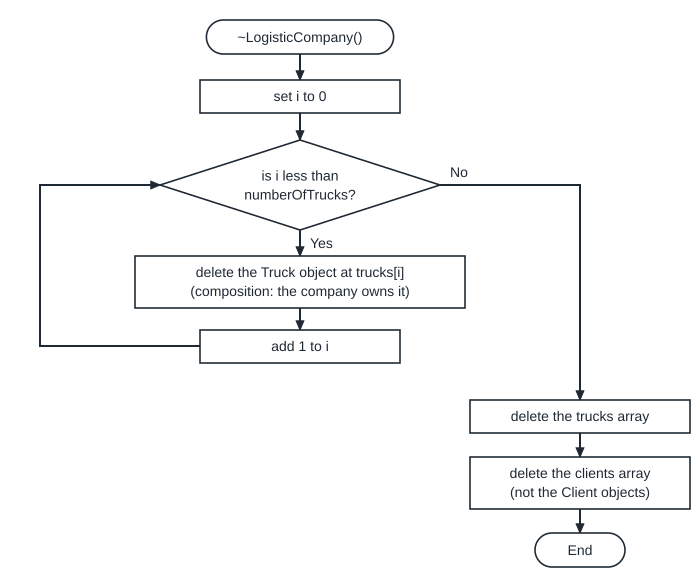
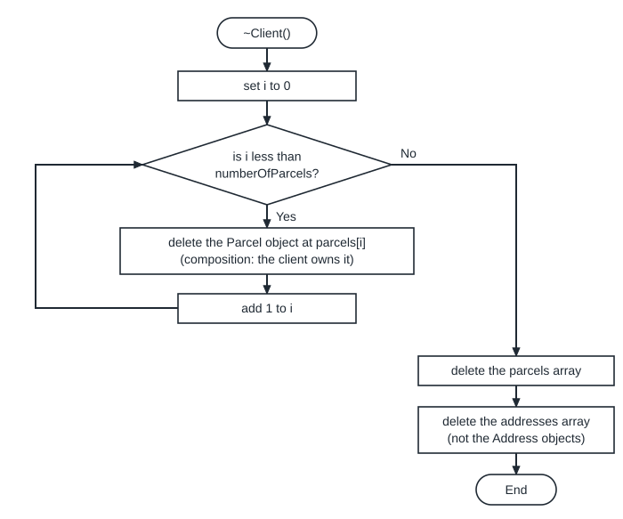
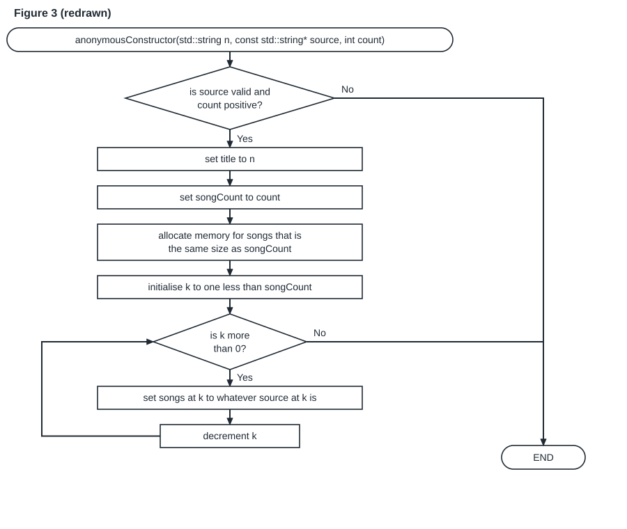
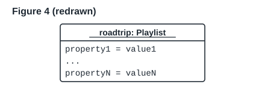
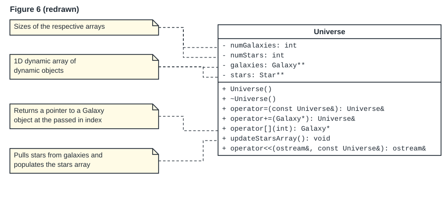

Mock test: the question paper (PDF) and its solutions.
Practice tasks
Write each answer on paper or in Notepad++ before you open the solution. For code, build it with g++ -std=c++98 -Wall -Werror *.cpp -o main in PowerShell, then run .\main.exe. For flowcharts, use DrawIO.
Assumed
The lab PCs have no valgrind, so check each new and delete by reading the code.
| # | Task | Topic | Level |
|---|---|---|---|
| 1 | LibraryBook | Accessors and mutators | 1 |
| 2 | Spot the errors in Bank | static members | 2 |
| 3 | Circle with three constructors | Constructors | 1 |
| 4 | Bank with an initialisation list | The initialisation list | 2 |
| 5 | Predict: a conversion | Automatic type conversion | 2 |
| 6 | Define the statics | static members | 1 |
| 7 | Does it need a destructor? | The destructor | 1 |
| 8 | Predict: copies and a static count | Object lifetime | 3 |
| 9 | Tray: copy constructor and destructor | The copy constructor | 2 |
| 10 | IntArray: copy constructor, destructor and operator= | The assignment operator | 3 |
| 11 | Three broken assignment operators | The assignment operator | 2 |
| 12 | Flowchart: the Book destructor | The destructor | 2 |
| 13 | Flowchart: the Tray assignment operator | The assignment operator | 3 |
| 14 | Code to class diagram | Header and implementation files | 2 |
| 15 | Which lines compile? | const | 2 |
| 16 | The values do not change | The this pointer | 1 |
Task 1: LibraryBook
Warm-up (level 1 of 3) Topic: Accessors and mutators.
Tutorial 3: write a class LibraryBook with hidden properties title, isbn (strings) and isCheckedOut (bool), a constructor that takes the title and ISBN and starts the book as not checked out, mutators checkOut() and returnBook(), and accessors getIsCheckedOut() and getTitle(). Write the bodies outside the class.
Write your answer before you open the solution.
#include <iostream>
#include <string>
class LibraryBook {
public:
LibraryBook(std::string title, std::string isbn);
void checkOut();
void returnBook();
bool getIsCheckedOut() const;
std::string getTitle() const;
private:
std::string title;
std::string isbn;
bool isCheckedOut;
};
LibraryBook::LibraryBook(std::string title, std::string isbn)
: title(title), isbn(isbn), isCheckedOut(false) {}
void LibraryBook::checkOut() {
isCheckedOut = true;
}
void LibraryBook::returnBook() {
isCheckedOut = false;
}
bool LibraryBook::getIsCheckedOut() const {
return isCheckedOut;
}
std::string LibraryBook::getTitle() const {
return title;
}
int main() {
LibraryBook b("Dune", "978-0441013593");
b.checkOut();
std::cout << b.getTitle() << " " << b.getIsCheckedOut() << std::endl;
b.returnBook();
std::cout << b.getIsCheckedOut() << std::endl;
return 0;
}It prints:
Dune 1 0
Task 2: Spot the errors in Bank
Exam-typical (level 2 of 3) Topic: static members.
Tutorial 3, “Spot the error”: find and explain every error.
class Bank {
private:
static double primeRate;
double vaultBalance;
public:
static double getPrimeRate() const;
double getBalance() const;
};
double Bank::primeRate = 7;
double getPrimeRate() {
return Bank::primeRate;
}
double Bank::getBalance() const {
vaultBalance += 10.0;
return vaultBalance;
}
int main() {
return 0;
}Write your answer before you open the solution.
main.cpp:9:32: error: static member function ‘static double Bank::getPrimeRate()’ cannot have cv-qualifier main.cpp:16:16: error: ‘double Bank::primeRate’ is private within this context main.cpp:20:16: error: assignment of member ‘Bank::vaultBalance’ in read-only object
| Line | Problem | Fix |
|---|---|---|
| 9 | a static function cannot be const | remove const |
| 15 and 16 | double getPrimeRate() has no Bank::, so it is a separate function and cannot read the private primeRate | double Bank::getPrimeRate() |
| 20 | getBalance() const changes vaultBalance | an accessor only returns it; changing it belongs in a mutator such as deposit |
double Bank::primeRate = 7; is correct. A fixed version with a deposit mutator prints 7 10.
Task 3: Circle with three constructors
Warm-up (level 1 of 3) Topic: Constructors.
Write a class Circle with a private radius, a default constructor (radius 0), a parameterised constructor, a copy constructor, getRadius, setRadius and area() (use 3.14159). Test: Circle c1;, Circle* c2 = new Circle(2);, Circle c3(*c2);, then c3.setRadius(1);, print the three areas, and delete c2.
Write your answer before you open the solution.
#include <iostream>
class Circle {
private:
double radius;
public:
Circle();
Circle(double r);
Circle(const Circle& other);
double getRadius() const;
void setRadius(double r);
double area() const;
};
Circle::Circle() : radius(0) {}
Circle::Circle(double r) : radius(r) {}
Circle::Circle(const Circle& other) : radius(other.radius) {}
double Circle::getRadius() const {
return radius;
}
void Circle::setRadius(double r) {
radius = r;
}
double Circle::area() const {
return 3.14159 * radius * radius;
}
int main() {
Circle c1;
Circle* c2 = new Circle(2);
Circle c3(*c2);
c3.setRadius(1);
std::cout << c1.area() << " " << c2->area() << " " << c3.area() << std::endl;
delete c2;
return 0;
}It prints:
0 12.5664 3.14159
Circle has no pointer member, so the free copy constructor would also work; writing it here is practice in the form.
Task 4: Bank with an initialisation list
Exam-typical (level 2 of 3) Topic: The initialisation list.
Lecture 7 sets the Bank members in the body: this->bankName = bankName; vaultBalance = balance; bankAccounts = NULL; numberOfAccounts = 0;. Rewrite the constructor so that every member is set in the initialisation list and the body is empty.
Write your answer before you open the solution.
Bank::Bank(std::string bankName, double balance)
: bankName(bankName), vaultBalance(balance), bankAccounts(NULL), numberOfAccounts(0) {}
void Bank::print() const {
std::cout << bankName << " " << vaultBalance << " " << numberOfAccounts << std::endl;
}Test lines Bank b1;, Bank b2("Absa"); and new Bank("Capitec", 1000) print:
myBank 0 0 Absa 0 0 Capitec 1000 0
The list follows the order of declaration: bankName, vaultBalance, bankAccounts, numberOfAccounts.
Task 5: Predict: a conversion
Exam-typical (level 2 of 3) Topic: Automatic type conversion.
Write the output of this program.
class Book {
private:
std::string title;
public:
Book(std::string title = "Untitled") : title(title) {
std::cout << "Book(" << title << ")" << std::endl;
}
void archive(const Book& b) {
std::cout << "archive " << b.title << std::endl;
}
};
int main() {
Book b;
b.archive(std::string("Dune"));
return 0;
}Write your answer before you open the solution.
Book(Untitled) Book(Dune) archive Dune
Book b; uses the default "Untitled". archive needs a const Book&; the constructor can be called with one string, so a temporary Book("Dune") is made first.
Task 6: Define the statics
Warm-up (level 1 of 3) Topic: static members.
Each underlined UML attribute below is static. Write the line that defines it in the .cpp file.
- sensorCount: intin classSensor, starting at 0- primeRate: doublein classBank, starting at 0.105- addresses: Address**in classGPS, starting at NULL (Class Test 2A)
Write your answer before you open the solution.
int Sensor::sensorCount = 0; double Bank::primeRate = 0.105; Address** GPS::addresses = NULL;
Type, Class::, name, value. No static, and not in the header.
Task 7: Does it need a destructor?
Warm-up (level 1 of 3) Topic: The destructor.
The 2026 Logistics class mock asked why Driver needs no destructor but LogisticCompany does. Answer in one sentence each:
Driver:- name: string,- licence: string(Assumed members)LogisticCompany:- trucks: Truck**(composition),- numberOfTrucks: int,- clients: Client**(aggregation),- numberOfClients: int
Write your answer before you open the solution.
- No: Driver makes no dynamic memory. Its strings release their own memory, so the free destructor is enough.
- Yes: it makes the
trucksandclientsarrays withnew, and owns the Trucks. Its destructor deletes each Truck, the trucks array and the clients array (not the Clients).
One mark each in the mock. Name the dynamic member in your reason.
Task 8: Predict: copies and a static count
Longer (level 3 of 3) Topic: Object lifetime.
Write every line this program prints.
class Token {
private:
int id;
static int live;
public:
Token(int id) : id(id) {
live++;
std::cout << "make " << this->id << ", live " << live << std::endl;
}
Token(const Token& other) : id(other.id * 10) {
live++;
std::cout << "copy " << id << ", live " << live << std::endl;
}
~Token() {
live--;
std::cout << "gone " << id << ", live " << live << std::endl;
}
};
int Token::live = 0;
void use(Token t) {
std::cout << "use" << std::endl;
}
int main() {
Token a(1);
Token* p = new Token(2);
use(a);
{
Token b(a);
}
delete p;
return 0;
}Write your answer before you open the solution.
make 1, live 1 make 2, live 2 copy 10, live 3 use gone 10, live 2 copy 10, live 3 gone 10, live 2 gone 2, live 1 gone 1, live 0
| Line | What runs |
|---|---|
Token a(1); | constructor: make 1 |
new Token(2) | constructor: make 2 |
use(a); | pass by value: copy constructor (id 10), the body, then the copy is destroyed |
{ Token b(a); } | copy constructor (id 10), destroyed at } |
delete p; | destructor of the heap Token 2 |
| end of main | destructor of a |
Task 9: Tray: copy constructor and destructor
Exam-typical (level 2 of 3) Topic: The copy constructor.
A Tray owns its cups (composition): Cup** cups, int numCups. Cup has a working copy constructor. Write Tray(const Tray& other) (deep copy) and ~Tray().
Write your answer before you open the solution.
Tray::Tray(const Tray& other) : numCups(other.numCups) {
cups = new Cup*[numCups];
for (int i = 0; i < numCups; i++) {
cups[i] = new Cup(*other.cups[i]);
}
}Tray::~Tray() {
for (int i = 0; i < numCups; i++) {
delete cups[i];
}
delete[] cups;
}The test paints cup 0 red, copies the tray, paints the copy’s cup 0 blue, and prints the colours:
red blue white
The original keeps red: the copy has its own Cups.
Task 10: IntArray: copy constructor, destructor and operator=
Longer (level 3 of 3) Topic: The assignment operator.
IntArray has int* arr and int size. Write the copy constructor, the destructor and the assignment operator, so that copies are independent.
Write your answer before you open the solution.
IntArray::IntArray(const IntArray& other) {
size = other.size;
arr = new int[size];
for (int i = 0; i < size; i++) {
arr[i] = other.arr[i];
}
}IntArray::~IntArray() {
delete[] arr;
}IntArray& IntArray::operator=(const IntArray& other) {
if (this != &other) {
delete[] arr;
size = other.size;
arr = new int[size];
for (int i = 0; i < size; i++) {
arr[i] = other.arr[i];
}
}
return *this;
}int main() {
IntArray a(3);
a.set(0, 7);
IntArray b(a);
b.set(1, 8);
IntArray c(1);
c = b;
c.set(2, 9);
a.print();
b.print();
c.print();
return 0;
}7 0 0 7 8 0 7 8 9
Each line differs, so a, b and c have their own arrays.
Task 11: Three broken assignment operators
Exam-typical (level 2 of 3) Topic: The assignment operator.
For each version of Score::operator= (Score holds int* value), say what goes wrong.
- No
if (this != &other)check. - No
delete value;before the copy. return *this;only inside theif.
Write your answer before you open the solution.
a = a;deletes the int and then copies from it. valgrind:Invalid read of size 4.- The old int is never deleted: each assignment leaks 4 bytes (the free operator in the Theory page leaks the same way).
- The build fails:
control reaches end of non-void function [-Werror=return-type].
Task 12: Flowchart: the Book destructor
Exam-typical (level 2 of 3) Topic: The destructor.
Draw the flowchart (DrawIO, COS 132 notation) for Book::~Book(), where Book owns its Chapters (Chapter** chapters, numberOfChapters). Use words in each node.
Write your answer before you open the solution.

Check: an oval at each end, diamonds with Yes and No, a loop that goes back to its decision, and no node that holds only code.
Task 13: Flowchart: the Tray assignment operator
Longer (level 3 of 3) Topic: The assignment operator.
Tray owns its Cups. Describe, as a numbered list of flowchart nodes (decisions marked), the algorithm for Tray& operator=(const Tray& other). Then draw it in DrawIO.
Write your answer before you open the solution.
- Start.
- Decision: is other the same object as this? Yes: go to step 9.
- Set i to 0. Decision: is i less than numCups? Yes: delete cup i, add 1 to i, repeat.
- Delete the cups array.
- Copy numCups from other.
- Make a new cups array of numCups slots.
- Set i to 0. Decision: is i less than numCups? Yes: make a new Cup copied from other’s cup i, add 1 to i, repeat.
- (Nothing shared: Tray has only owned parts.)
- Return this object. End.
The same steps as IntArray::operator= (Task 10), with a loop for the objects. For shared parts see Example 7.
Task 14: Code to class diagram
Exam-typical (level 2 of 3) Topic: Header and implementation files.
Draw the UML class box for UserSession from Example 2’s header. Write it as text, one line per member.
Write your answer before you open the solution.
UserSession - username: string - sessionDuration: int - activeSessionCount: int (underlined) + UserSession(username: string) + ~UserSession() + getUsername(): string + getActiveSessionCount(): int (underlined) + updateDuration(sessionDuration: int): void
Each data member becomes - name: type, each public function + name(parameter: type): returnType; static members are underlined. UML has no mark for a C++ const function.
Task 15: Which lines compile?
Exam-typical (level 2 of 3) Topic: const.
Shelf has const Book& getFirst() const; and void add(const Book& book);. Book has getTitle() const and setTitle(std::string). Inside add, which of these compile?
std::string t = book.getTitle();book.setTitle("x");count++;(count is a member of Shelf)
Write your answer before you open the solution.
- Compiles: a const accessor on a const reference.
- Does not: a mutator on a const reference (“discards qualifiers”).
- Compiles:
addis not a const function, so it may change the Shelf.
Task 16: The values do not change
Warm-up (level 1 of 3) Topic: The this pointer.
void Player::setScore(int score) { score = score; } is called with 5, but the score stays 0. Explain and fix.
Write your answer before you open the solution.
The parameter score hides the member, so the line copies the parameter into itself. Fix: this->score = score;, or rename the parameter. See the run on the this pointer section.
From past papers
These questions are copied word for word from COS 110 tests and exam papers. Each one names its source. Parts of a scan that cannot be read are marked [unreadable in the source]. In the solutions, "the test" means a small test program that runs the answer; its output is shown. Assumed marks a choice that the paper does not state.
Past paper 1: Read access specifiers from + and -
Class Test 2A, 2026, Q1(a)iii; also Logistics UML mock, 2026, Q1 (statement 3) [1 mark]
Consider the following UML Class diagram that depicts a logistical company system. Note that all the arrays in the UML Class diagram are 1D dynamic arrays of dynamic objects. Answer the questions that follow:
![Figure: UML class diagram of the logistics company. Seven classes. Driver: - name: string, - lastName: string, - licenseCode: char; Driver(fn: string, ln: string, lc: char). GPS (all members underlined, so static): - addresses: Address**, - numberOfAddresses: int; + obtainAddress(address: string): const Address&, + destroyAddresses(): void. LogisticCompany: - trucks: Truck**, - numberOfTrucks: int, - clients: Client**, - numberOfClients: int; + LogisticsCompany(), + ~LogisticsCompany(), + addClient(client: const Client&): void, + addPackageToTruck(parcel: const Parcel&, truckIndex: int): void, + addDriverToTruck(driver: const Driver&, truckIndex: int): void, + deliverParcel(truckIndex: int, parcelIndex: int): void. Address: - address: const string&; + Address(address: const std::string&), + getAddress(): const string&. Client: - addresses: Address**, - numberOfAddresses: int, - parcels: Parcel**, - numberOfParcels: int; + Client(), + ~Client(), + addAddress(address: Address&): void, + generateParcel(weight: double, description: string, fragile: bool, address: const Address&): Parcel&, + receiveParcel(parcel: const Parcel&): void. Truck: - drivers: Driver**, - numberOfDrivers: int, - parcels: Parcel**, - numberOfParcels: int; + Truck(), + ~Truck(), + addDriver(driver: const Driver&): void, + addParcel(parcel: const Parcel&): void, + deliverParcel(parcel: const Parcel&): void. Parcel: - weight: double, - description: string, - fragile: bool, - address: const Address&, - delivered: bool; + Parcel(weight: double, description: string, fragile: bool, address: const Address&), + markDelivered(): bool. Links: LogisticCompany (1, black diamond) to Truck (1..*); LogisticCompany (1, white diamond) to Client (1..*); Truck (1, white diamond) to Driver (1..*); Truck (1, white diamond) to Parcel (1..*); Client (1, black diamond) to Parcel (1..*); Client (1..*, white diamond) to Address (1..*); Parcel (1, white diamond) to Address (1); GPS (black diamond) to Address (1..*). Dashed dependency arrows: LogisticCompany to Driver, LogisticCompany to Parcel, Client to GPS.](assets/diagrams/pp_logistics_class.svg)
1. (a) For each of the following statements, fill in the missing terms:
iii. In the LogisticCompany class, the access specifier of the constructor is ____, while the access specifier for the trucks member is ____.
(The diagram is redrawn from the Logistics UML mock, 2026. Class Test 2A prints the generateParcel line as + generateParcel(weight: double, description: string, fragile: bool, address): const Address&.)
Write your answer before you open the solution.
In a UML class box, + means public and - means private.
The constructor line is + LogisticsCompany(), so the constructor is public. The member line is - trucks: Truck**, so trucks is private.
Answer: the constructor is public, while the access specifier for the trucks member is private.
The program below makes an object outside the class. This works because the constructor is public.
main.cpp
#include <iostream>
class Truck;
class LogisticCompany {
private:
Truck** trucks; // "-" in the diagram: private
int numberOfTrucks;
public:
LogisticCompany() : trucks(NULL), numberOfTrucks(0) {} // "+": public
int getNumberOfTrucks() const { return numberOfTrucks; }
};
int main() {
LogisticCompany company; // allowed: the constructor is public
std::cout << "Trucks: " << company.getNumberOfTrucks() << std::endl;
return 0;
}Trucks: 0
The second program adds one line in main: company.trucks = NULL;. g++ refuses it because trucks is private.
main.cpp:17:13: error: ‘Truck** LogisticCompany::trucks’ is private within this context
Note: the diagram spells the constructor LogisticsCompany() while the class is LogisticCompany. In C++ the constructor name must equal the class name, so code uses LogisticCompany().
Past paper 2: Access specifiers in the Parcel class
Logistics UML mock, 2026, Q2 (statement 3)
Consider the following UML Class diagram depicting a logistics company system. Note that all the arrays in the UML Class diagram are 1D dynamic arrays of dynamic objects. Answer the questions that follow:
For each of the following statements, fill in the missing terms:
3. In the Parcel class, the access specifier of the constructor is ____, while the access specifier for the *fragile* member is ____.
The blanks are dropdown boxes on the online test; the options are not shown on the export. Q2 as a whole is worth 3.5 points.
Write your answer before you open the solution.
Look at the Parcel box. The constructor line starts with +: + Parcel(weight: double, ...). So the constructor is public.
The member line is - fragile: bool. It starts with -, so fragile is private.
Answer: the constructor is public, while the access specifier for the fragile member is private.
main.cpp
#include <iostream>
#include <string>
class Address {
};
class Parcel {
private:
double weight;
std::string description;
bool fragile; // "-" in the diagram: private
const Address& address;
bool delivered;
public:
Parcel(double weight, std::string description, bool fragile, const Address& address)
: weight(weight), description(description), fragile(fragile), address(address), delivered(false) {}
bool markDelivered() { delivered = true; return delivered; }
};
int main() {
Address home;
Parcel parcel(1.5, "Book", true, home); // allowed: the constructor is public
std::cout << std::boolalpha << "Delivered: " << parcel.markDelivered() << std::endl;
return 0;
}Delivered: true
If main adds parcel.fragile = false;, g++ stops, because fragile is private:
main.cpp:24:12: error: ‘bool Parcel::fragile’ is private within this context
Past paper 3: Why Client needs a destructor and Address does not
Class Test 2A, 2026, Q1(b); also Logistics UML mock, 2026, Q6 [1 mark]
Consider the following UML Class diagram that depicts a logistical company system. Note that all the arrays in the UML Class diagram are 1D dynamic arrays of dynamic objects. Answer the questions that follow:
(b) Explain why Address class does not need a user-defined destructor, while the Client class does.
(The diagram is redrawn from the Logistics UML mock, 2026. Class Test 2A prints the generateParcel line as + generateParcel(weight: double, description: string, fragile: bool, address): const Address&.)
Write your answer before you open the solution.
A user-defined destructor is needed when the object itself used new and must give that memory back.
Address has one member: address: const string&. It is a reference to a string that lives somewhere else. Address uses no new, so there is nothing to delete. The destructor that C++ writes is enough.
Client has addresses: Address** and parcels: Parcel**. These are 1D dynamic arrays (the note on the diagram says so). The black diamond from Client to Parcel also says the client owns its parcels. The C++ destructor only removes the pointers, not the memory they point to. So Client must have ~Client() that deletes each parcel, then the parcels array and the addresses array. Without it, the memory leaks.
Model answer: Address holds no dynamically allocated memory (only a reference), so the automatic destructor is enough. Client holds dynamic arrays (Address**, Parcel**) and owns its Parcel objects, so it needs a destructor to delete them, or memory is leaked.
Client::~Client() {
for (int i = 0; i < numberOfParcels; i++) {
delete parcels[i];
}
delete[] parcels;
delete[] addresses;
std::cout << "~Client()" << std::endl;
}main.cpp
#include <iostream>
#include <string>
#include "Address.h"
#include "Client.h"
int main() {
std::string text = "12 Lynnwood Road";
Address home(text); // Address uses no new
Client* client = new Client();
client->addAddress(home);
client->generateParcel(2.5, "Books", false, home);
client->generateParcel(1.0, "Mug", true, home);
std::cout << "Address: " << home.getAddress() << std::endl;
delete client; // ~Client() frees what new created
std::cout << "End of main" << std::endl;
return 0;
}Address: 12 Lynnwood Road ~Client() End of main
The next program has the same Client members but no destructor. Valgrind reports the leak:
main.cpp
#include <iostream>
class Parcel {
private:
double weight;
public:
Parcel(double w) : weight(w) {}
};
// The same members as Client, but no destructor is written.
class Client {
private:
Parcel** parcels;
int numberOfParcels;
public:
Client() : parcels(NULL), numberOfParcels(0) {}
void generateParcel(double weight) {
Parcel** bigger = new Parcel*[numberOfParcels + 1];
for (int i = 0; i < numberOfParcels; i++) {
bigger[i] = parcels[i];
}
bigger[numberOfParcels] = new Parcel(weight);
delete[] parcels;
parcels = bigger;
numberOfParcels++;
}
};
int main() {
Client* client = new Client();
client->generateParcel(2.5);
client->generateParcel(1.0);
delete client; // the automatic destructor frees nothing
std::cout << "Client deleted" << std::endl;
return 0;
}32 (16 direct, 16 indirect) bytes in 1 blocks are definitely lost in loss record 3 of 3
Past paper 4: Why LogisticCompany needs a destructor and Driver does not
Logistics UML mock, 2026, Q5 [1 mark]
Consider the following UML Class diagram depicting a logistics company system. Note that all the arrays in the UML Class diagram are 1D dynamic arrays of dynamic objects. Answer the questions that follow:
Explain why Driver class does not need a user-defined destructor, while the LogisticCompany class does.
Write your answer before you open the solution.
Driver has three members: name: string, lastName: string and licenseCode: char. None of them is a pointer and Driver uses no new. The C++ destructor already calls the string destructors, so nothing is left behind.
LogisticCompany has trucks: Truck** and clients: Client**. Both are dynamic arrays. The black diamond to Truck says the company owns its trucks. So ~LogisticCompany() must delete each truck and then the trucks array. It must also delete the clients array. The white diamond to Client says the clients are not owned, so the client objects are not deleted.
Model answer: Driver holds no dynamic memory (only strings and a char), so the automatic destructor is enough. LogisticCompany holds dynamic arrays and owns its Truck objects, so it needs a destructor to free them, or memory leaks.
LogisticCompany::~LogisticCompany() {
for (int i = 0; i < numberOfTrucks; i++) {
delete trucks[i];
}
delete[] trucks;
delete[] clients;
std::cout << "~LogisticCompany()" << std::endl;
}main.cpp
#include <iostream>
#include "LogisticCompany.h"
int main() {
Driver* driver = new Driver("Thabo", "Mokoena", 'C');
LogisticCompany* company = new LogisticCompany();
company->addDriverToTruck(*driver, 0);
delete driver; // the automatic ~Driver() frees the two strings
std::cout << "Driver deleted" << std::endl;
delete company; // ~LogisticCompany() frees the trucks and both arrays
return 0;
}Driver deleted ~Truck() ~Truck() ~LogisticCompany()
Past paper 5: Initialise a static member
Class Test 2A, 2026, Q1(c); also Logistics UML mock, 2026, Q7 [0.5 marks]
Consider the following UML Class diagram that depicts a logistical company system. Note that all the arrays in the UML Class diagram are 1D dynamic arrays of dynamic objects. Answer the questions that follow:
(c) Provide the C++ code to initialise the addresses in the GPS class to NULL.
(The diagram is redrawn from the Logistics UML mock, 2026. Class Test 2A prints the generateParcel line as + generateParcel(weight: double, description: string, fragile: bool, address): const Address&.)
Write your answer before you open the solution.
In the GPS box the members are underlined. In UML, underlined means static. So addresses is a static member of type Address**.
A static data member belongs to the class, not to one object. It is declared inside the class, but it must be defined once outside the class, in the .cpp file. The definition repeats the type, uses GPS:: and does not repeat the word static.
Address** GPS::addresses = NULL;
int GPS::numberOfAddresses = 0;When the line is given as four blanks, ____ ____::____ = ____;, they hold Address**, GPS, addresses and NULL.
The program below never makes a GPS object. The static member still exists and is NULL.
main.cpp
#include <iostream>
#include "GPS.h"
int main() {
// No GPS object exists, yet the static member already exists and is NULL.
std::cout << std::boolalpha << "GPS has addresses: " << GPS::hasAddresses() << std::endl;
GPS::destroyAddresses(); // safe: the loop runs 0 times, delete[] NULL does nothing
std::cout << "GPS has addresses: " << GPS::hasAddresses() << std::endl;
return 0;
}GPS has addresses: false GPS has addresses: false
Past paper 6: Flowchart of the LogisticCompany destructor
Class Test 2A, 2026, Q2; also Logistics UML mock, 2026, Q4 [5 marks]
Consider the following UML Class diagram that depicts a logistical company system. Note that all the arrays in the UML Class diagram are 1D dynamic arrays of dynamic objects. Answer the questions that follow:
2. Using the UML Class Diagram, as well as the relations and multiplicity indicated on the diagram, design the flowchart for the LogisticCompany class' destructor. All the correct memory should be deallocated. The use of incorrect flowchart notation will result in marks being subtracted.
(The diagram is redrawn from the Logistics UML mock, 2026. Class Test 2A prints the generateParcel line as + generateParcel(weight: double, description: string, fragile: bool, address): const Address&.)
Write your answer before you open the solution.
Step 1. Read the links of LogisticCompany in the diagram.
LogisticCompanytoTruck: black diamond (composition), 1 to 1..*. The company owns its trucks. The destructor deletes everyTruckobject and then thetrucksarray.LogisticCompanytoClient: white diamond (aggregation), 1 to 1..*. The company only uses the clients. The destructor deletes only theclientsarray, not theClientobjects.- The dashed arrows to
DriverandParcelare dependencies. The company stores none of them, so there is nothing to delete for them.
Step 2. Draw the flowchart. Use a terminator for start and end, rectangles for actions, a diamond for the loop test, and write the actions in words, not only as code.

Step 3. The matching C++:
LogisticCompany::~LogisticCompany() {
for (int i = 0; i < numberOfTrucks; i++) {
delete trucks[i];
}
delete[] trucks;
delete[] clients;
std::cout << "~LogisticCompany()" << std::endl;
}The test program gives the company two trucks and one client. The output shows that the trucks are destroyed with the company, while the client still exists afterwards. Valgrind reports no leak.
main.cpp
#include <iostream>
#include <string>
#include "LogisticCompany.h"
int main() {
std::string text = "5 Main Street";
Address address(text);
Driver driver("Thabo", "Mokoena", 'C');
Client* client = new Client();
Parcel& parcel = client->generateParcel(3.0, "Laptop", true, address);
LogisticCompany* company = new LogisticCompany();
company->addClient(*client);
company->addDriverToTruck(driver, 0);
company->addPackageToTruck(parcel, 1);
std::cout << "Deleting the company" << std::endl;
delete company; // deletes the 2 trucks and both arrays, not the client
std::cout << "The client still exists" << std::endl;
delete client; // the client is deleted by the code that created it
return 0;
}Deleting the company ~Truck() ~Truck() ~LogisticCompany() The client still exists ~Client()
Assumed: the diagram has no function that adds trucks, so the test constructor makes two trucks.
Past paper 7: Flowchart of the Client destructor
Logistics UML mock, 2026, Q3 [5 marks]
Consider the following UML Class diagram depicting a logistics company system. Note that all the arrays in the UML Class diagram are 1D dynamic arrays of dynamic objects. Answer the questions that follow:
Using the UML Class Diagram, as well as the relations and multiplicity indicated on the diagram, design the flowchart for the Client class' destructor. All the correct memory should be deallocated. The use of incorrect flowchart notation will result in marks being subtracted. [5 marks]
Upload your solution as a DrawIO (xml) file to the CS Portal->
Did you submit an answer to the correct location? True / False
Write your answer before you open the solution.
Step 1. Read the links of Client in the diagram.
ClienttoParcel: black diamond atClient(composition), 1 to 1..*. The client owns its parcels (generateParcelcreates them). Delete everyParcelobject, then theparcelsarray.ClienttoAddress: white diamond atClient(aggregation). The client only points to addresses that belong to someone else. Delete only theaddressesarray.- The dashed arrow to
GPSis a dependency.Clientstores nothing fromGPS.

The matching C++:
Client::~Client() {
for (int i = 0; i < numberOfParcels; i++) {
delete parcels[i];
}
delete[] parcels;
delete[] addresses;
std::cout << "~Client()" << std::endl;
}In the test, the two Address objects are still usable after the client is deleted, and valgrind reports no leak.
main.cpp
#include <iostream>
#include <string>
#include "Address.h"
#include "Client.h"
int main() {
std::string home = "12 Lynnwood Road";
std::string work = "2 Lynnwood Road";
Address a1(home);
Address a2(work);
Client* client = new Client();
client->addAddress(a1);
client->addAddress(a2);
client->generateParcel(2.5, "Books", false, a1);
client->generateParcel(1.0, "Mug", true, a2);
client->generateParcel(7.0, "Chair", false, a1);
delete client; // frees 3 parcels and 2 arrays; a1 and a2 are not deleted
std::cout << "Addresses still usable: " << a1.getAddress() << ", " << a2.getAddress() << std::endl;
return 0;
}~Client() Addresses still usable: 12 Lynnwood Road, 2 Lynnwood Road
Past paper 8: Write Client.h from the class box
Class Test 2A, 2026, Q3; also Logistics UML mock, 2026, Q9 [5 marks]
Consider the following UML Class diagram that depicts a logistical company system. Note that all the arrays in the UML Class diagram are 1D dynamic arrays of dynamic objects. Answer the questions that follow:
3. Provide the complete header file (containing include guards and includes) for the Client class. You can assume each class is defined in its own header file, with the name of the class as the file name. For example, the Client class is declared in the Client.h file. Note: adding unnecessary includes will result in marks being deducted.
Note: on the Class Test 2A paper the generateParcel line of Client is printed as + generateParcel(weight: double, description: string, fragile: bool, address): const Address&. The mock test prints it as ... address: const Address&): Parcel&. The redrawn diagram uses the mock-test line.
(The diagram is redrawn from the Logistics UML mock, 2026. Class Test 2A prints the generateParcel line as + generateParcel(weight: double, description: string, fragile: bool, address): const Address&.)
Write your answer before you open the solution.
Build the header from the Client box, line by line:
- Include guards:
#ifndef CLIENT_H,#define CLIENT_H, and#endifat the end. -members go underprivate:.addresses: Address**becomesAddress** addresses;. Do the same for the other three members.+functions go underpublic:.name(param: Type): ReturnbecomesReturn name(Type param);. A constructor and destructor have no return type.- Includes:
<string>for thedescriptionparameter,"Address.h"and"Parcel.h"because the class uses those types. - No
"GPS.h": the dashed arrow to GPS is a dependency used in the.cppfile only (Assumed). No<iostream>: the header prints nothing.
Client.h
#ifndef CLIENT_H
#define CLIENT_H
#include <string>
#include "Address.h"
#include "Parcel.h"
class Client {
private:
Address** addresses;
int numberOfAddresses;
Parcel** parcels;
int numberOfParcels;
public:
Client();
~Client();
void addAddress(Address& address);
Parcel& generateParcel(double weight, std::string description, bool fragile, const Address& address);
void receiveParcel(const Parcel& parcel);
};
#endifAssumed: generateParcel returns Parcel&, as on the mock test (see the note under the question).
A smaller header is also valid C++: the class only uses pointers and references to Address and Parcel, so class Address; and class Parcel; (forward declarations) compile too. The paper does not say which form the markers expect (Assumed: either is accepted).
The test program uses every function of the header:
main.cpp
#include <iostream>
#include <string>
#include "Client.h"
int main() {
std::string text = "12 Lynnwood Road";
Address home(text);
Client client;
client.addAddress(home);
Parcel& parcel = client.generateParcel(2.5, "Books", false, home);
client.receiveParcel(parcel);
std::cout << std::boolalpha << "Delivered: " << parcel.isDelivered() << std::endl;
return 0;
}Delivered: true ~Client()
Past paper 9: Write LogisticCompany.h from the class box
Logistics UML mock, 2026, Q8 [5 marks]
Consider the following UML Class diagram depicting a logistics company system. Note that all the arrays in the UML Class diagram are 1D dynamic arrays of dynamic objects. Answer the questions that follow:
Provide the complete header file (containing include guards and includes) for the LogicsticCompany class. You can assume each class is defined in its own header file, with the name of the class as the file name. For example, the LogicsticCompany class is declared in the LogicsticCompany.h file. Note: adding unnecessary includes will result in marks being deducted.
Write your answer before you open the solution.
The question spells the class LogicsticCompany, but the diagram class is LogisticCompany. The answer uses the diagram name.
- Include guards around the whole file.
- Private members from the
-lines:Truck** trucks;,int numberOfTrucks;,Client** clients;,int numberOfClients;. - Public functions from the
+lines. The diagram writesLogisticsCompany(), but a constructor must have the class name, so writeLogisticCompany();and~LogisticCompany();. - Includes:
"Truck.h"and"Client.h"for the two arrays,"Parcel.h"and"Driver.h"for the parameter types. No<string>: no member or parameter is a string. No<iostream>.
LogisticCompany.h
#ifndef LOGISTICCOMPANY_H
#define LOGISTICCOMPANY_H
#include "Truck.h"
#include "Client.h"
#include "Parcel.h"
#include "Driver.h"
class LogisticCompany {
private:
Truck** trucks;
int numberOfTrucks;
Client** clients;
int numberOfClients;
public:
LogisticCompany();
~LogisticCompany();
void addClient(const Client& client);
void addPackageToTruck(const Parcel& parcel, int truckIndex);
void addDriverToTruck(const Driver& driver, int truckIndex);
void deliverParcel(int truckIndex, int parcelIndex);
};
#endifAs with Client.h, forward declarations (class Truck; and so on) would also compile, because only pointers and references are used (Assumed: either form is accepted).
main.cpp
#include <iostream>
#include <string>
#include "LogisticCompany.h"
int main() {
std::string text = "5 Main Street";
Address address(text);
Driver driver("Lerato", "Dlamini", 'B');
Client client;
Parcel& parcel = client.generateParcel(3.0, "Laptop", true, address);
LogisticCompany company;
company.addClient(client);
company.addPackageToTruck(parcel, 0);
company.addDriverToTruck(driver, 1);
std::cout << "LogisticCompany.h compiles and works" << std::endl;
return 0;
}LogisticCompany.h compiles and works ~Truck() ~Truck() ~LogisticCompany() ~Client()
Past paper 10: Implement Truck::deliverParcel
Class Test 2A, 2026, Q4 [5 marks]
Consider the following UML Class diagram that depicts a logistical company system. Note that all the arrays in the UML Class diagram are 1D dynamic arrays of dynamic objects. Answer the questions that follow:
4. Provide the C++ code implementation for the deliverParcel function. This function should find the parcel that has the same memory location as the passed-in parameter and mark it as delivered. If the Truck has no parcels or the parcel is not present in the truck, throw the following exception: "Invalid Parcel". Note: no inline implementation may be used.
(The diagram is redrawn from the Logistics UML mock, 2026. Class Test 2A prints the generateParcel line as + generateParcel(weight: double, description: string, fragile: bool, address): const Address&.)
Write your answer before you open the solution.
deliverParcel is the Truck function + deliverParcel(parcel: const Parcel&): void. "No inline" means the body is written outside the class, with Truck::.
- If
parcelsisNULLornumberOfParcelsis 0, the truck has no parcels: throw"Invalid Parcel". - "Same memory location" means the same address.
parcels[i]is aParcel*(an address).&parcelis the address of the parameter. Compare the two addresses with==. - When they match, call
parcels[i]->markDelivered();andreturn, so nothing is thrown. - If the loop ends without a match, the parcel is not on this truck: throw
"Invalid Parcel".
void Truck::deliverParcel(const Parcel& parcel) {
if (parcels == NULL || numberOfParcels == 0) {
throw "Invalid Parcel";
}
for (int i = 0; i < numberOfParcels; i++) {
if (parcels[i] != NULL) {
if (parcels[i] == &parcel) {
parcels[i]->markDelivered();
return;
}
}
}
throw "Invalid Parcel";
}Trace of the test: p1 is on the truck, so it is marked delivered. p2 is not on the truck, so the loop ends and the function throws. emptyTruck has parcels == NULL, so the first if throws.
main.cpp
#include <iostream>
#include <string>
#include "Truck.h"
#include "Client.h"
int main() {
std::string text = "1 Hatfield Street";
Address address(text);
Client client;
Parcel& p1 = client.generateParcel(2.0, "Shoes", false, address);
Parcel& p2 = client.generateParcel(4.0, "Lamp", true, address);
Truck truck;
truck.addParcel(p1);
truck.deliverParcel(p1);
std::cout << std::boolalpha << "p1 delivered: " << p1.isDelivered() << std::endl;
try {
truck.deliverParcel(p2); // p2 is not on this truck
} catch (const char* message) {
std::cout << "p2: " << message << std::endl;
}
Truck emptyTruck;
try {
emptyTruck.deliverParcel(p1); // this truck has no parcels
} catch (const char* message) {
std::cout << "empty truck: " << message << std::endl;
}
return 0;
}p1 delivered: true p2: Invalid Parcel empty truck: Invalid Parcel ~Truck() ~Truck() ~Client()
Assumed: the parameter is a const Parcel&, but addParcel stores it in a Parcel** array, so the test Truck.cpp uses const_cast in addParcel. The paper does not show addParcel.
Past paper 11: Fill the blanks of Truck::deliverParcel
Logistics UML mock, 2026, Q10 [5 marks]
Consider the following UML Class diagram depicting a logistics company system. Note that all the arrays in the UML Class diagram are 1D dynamic arrays of dynamic objects. Answer the questions that follow:
Provide the C++ code implementation for the deliverParcel function. This function should find the parcel that has the same memory location as the passed-in parameter and mark it as delivered. If the truck has no parcels or the parcel is not present in the truck, throw the following exception: "Invalid Parcel". Note: no inline implementation may be used.
____ ____::deliverParcel(____)
{
if(____){
throw ____;
}
for(int i=0; i < ____; i++){
if((parcels+i) ____ NULL){
if((parcels+i) == ____){
(parcels+i)->____;
return;
}
}
}
____ "Invalid Parcel";
}Each ____ is a dropdown box on the online test; the options are not shown on the export.
Write your answer before you open the solution.
| Blank | Answer |
|---|---|
| return type | void |
| class name | Truck |
| parameter | const Parcel& parcel |
if(____) | parcels == NULL |
throw ____; | "Invalid Parcel" |
i < ____ | numberOfParcels |
(parcels+i) ____ NULL | != |
(parcels+i) == ____ | &parcel |
(parcels+i)->____; | markDelivered() |
| last line | throw |
Why: the truck has no parcels when parcels is NULL. The loop checks each pointer. &parcel is the memory location of the parameter. markDelivered() sets the flag. The last line runs only when no parcel matched, so it throws.
Warning about the printed skeleton: parcels is a Parcel**. So parcels+i is also a Parcel** (the address of slot i), not the parcel's address. With the blanks filled in, the skeleton as printed does not compile:
void Truck::deliverParcel(const Parcel& parcel)
{
if(parcels == NULL){
throw "Invalid Parcel";
}
for(int i=0; i < numberOfParcels; i++){
if((parcels+i) != NULL){
if((parcels+i) == &parcel){
(parcels+i)->markDelivered();
return;
}
}
}
throw "Invalid Parcel";
}Truck.cpp:47:28: error: comparison between distinct pointer types ‘Parcel**’ and ‘const Parcel*’ lacks a cast [-fpermissive]
Truck.cpp:48:30: error: request for member ‘markDelivered’ in ‘*(((Truck*)this)->Truck::parcels + ((sizetype)(((long unsigned int)i) * 8)))’, which is of pointer type ‘Parcel*’ (maybe you meant to use ‘->’ ?)
The working version puts * in front of each (parcels+i): *(parcels+i) is the same as parcels[i], a Parcel*.
void Truck::deliverParcel(const Parcel& parcel)
{
if(parcels == NULL){
throw "Invalid Parcel";
}
for(int i=0; i < numberOfParcels; i++){
if(*(parcels+i) != NULL){
if(*(parcels+i) == &parcel){
(*(parcels+i))->markDelivered();
return;
}
}
}
throw "Invalid Parcel";
}p1 delivered: true p2: Invalid Parcel empty truck: Invalid Parcel ~Truck() ~Truck() ~Client()
Assumed: the printed skeleton has (parcels+i) without a *; the answer above adds it so that the code compiles.
Past paper 12: Fill the blanks of Client::receiveParcel
Logistics UML mock, 2026, Q11 [5 marks]
Consider the following UML Class diagram depicting a logistics company system. Note that all the arrays in the UML Class diagram are 1D dynamic arrays of dynamic objects. Answer the questions that follow:
Provide the C++ code implementation for the receiveParcel function. This function should find the parcel that has the same memory location as the passed-in parameter and mark it as delivered. If the Client has no parcels or the parcel is not present in the client, throw the following exception: "Invalid Parcel". Note: no inline implementation may be used.
____ ____::receiveParcel(____)
{
if(____){
throw ____;
}
for(int i=0; i < ____; i++){
if((parcels+i) ____ NULL){
if((parcels+i) == ____){
(parcels+i)->____;
return;
}
}
}
____ "Invalid Parcel";
}Each ____ is a dropdown box on the online test; the options are not shown on the export.
Write your answer before you open the solution.
This is the same pattern as Truck::deliverParcel, but in Client: + receiveParcel(parcel: const Parcel&): void.
| Blank | Answer |
|---|---|
| return type | void |
| class name | Client |
| parameter | const Parcel& parcel |
if(____) | parcels == NULL |
throw ____; | "Invalid Parcel" |
i < ____ | numberOfParcels |
(parcels+i) ____ NULL | != |
(parcels+i) == ____ | &parcel |
(parcels+i)->____; | markDelivered() |
| last line | throw |
As in the Truck version of this function (the past-paper question before this one), the printed (parcels+i) must really be *(parcels+i), which is parcels[i], for the code to compile. The tested version uses parcels[i]:
void Client::receiveParcel(const Parcel& parcel) {
if (parcels == NULL || numberOfParcels == 0) {
throw "Invalid Parcel";
}
for (int i = 0; i < numberOfParcels; i++) {
if (parcels[i] != NULL) {
if (parcels[i] == &parcel) {
parcels[i]->markDelivered();
return;
}
}
}
throw "Invalid Parcel";
}Trace: p1 belongs to c1, so it is marked delivered. p2 belongs to c2, so c1 throws. c3 has no parcels, so it throws at once.
main.cpp
#include <iostream>
#include <string>
#include "Client.h"
int main() {
std::string text = "1 Hatfield Street";
Address address(text);
Client c1;
Client c2;
Parcel& p1 = c1.generateParcel(2.0, "Shoes", false, address);
Parcel& p2 = c2.generateParcel(4.0, "Lamp", true, address);
c1.receiveParcel(p1);
std::cout << std::boolalpha << "p1 delivered: " << p1.isDelivered() << std::endl;
try {
c1.receiveParcel(p2); // p2 belongs to c2
} catch (const char* message) {
std::cout << "p2: " << message << std::endl;
}
Client c3;
try {
c3.receiveParcel(p1); // c3 has no parcels
} catch (const char* message) {
std::cout << "c3: " << message << std::endl;
}
return 0;
}p1 delivered: true p2: Invalid Parcel c3: Invalid Parcel ~Client() ~Client() ~Client()
Past paper 13: Static, const, both or neither
Intervention Test, 14 September 2026, Q1
1. Consider the following incomplete class, given its header and implementation files:
// --- Sensor.h ---
class Sensor {
private:
double reading;
static double calibrationOffset;
static int activeSensors;
public:
double getReading(); //1
double getCalibrationOffset(); //2
void setCalibrationOffset(double c); //3
void reset(); //4
};
// --- Sensor.cpp ---
#include "Sensor.h"
double Sensor::calibrationOffset = 0.0;
int Sensor::activeSensors = 0;
double Sensor::getReading(){
return reading;
}
double Sensor::getCalibrationOffset(){
return calibrationOffset;
}
void Sensor::setCalibrationOffset(double c){
calibrationOffset = c;
}
void Sensor::reset(){
reading = 0;
}For each function in Sensor (1-4), state whether it should be declared static, const, both, or neither. Justify each answer in a short sentence.
Write your answer before you open the solution.
Two rules decide it. A static function has no this object, so it may use only static members. A const function promises not to change the object it is called on. A function cannot be both, because const is a promise about this, and a static function has no this.
| Function | Answer | Reason |
|---|---|---|
1 getReading() | const | It reads the object's own reading and changes nothing. |
2 getCalibrationOffset() | static | It only reads the static calibrationOffset, so it needs no object. |
3 setCalibrationOffset(double c) | static | It only changes the static calibrationOffset; it cannot be const because it changes data. |
4 reset() | neither | It changes the object's own reading, so it needs this and must not be const. |
The program below uses these choices. getCalibrationOffset is called with no object, and a const Sensor can still call getReading():
main.cpp
#include <iostream>
class Sensor {
private:
double reading;
static double calibrationOffset;
static int activeSensors;
public:
Sensor() : reading(5.5) {} // added so the program has a reading
double getReading() const; //1 const
static double getCalibrationOffset(); // static //2
static void setCalibrationOffset(double c); //3 static
void reset(); //4 neither
};
double Sensor::calibrationOffset = 0.0;
int Sensor::activeSensors = 0;
double Sensor::getReading() const {
return reading;
}
double Sensor::getCalibrationOffset() {
return calibrationOffset;
}
void Sensor::setCalibrationOffset(double c) {
calibrationOffset = c;
}
void Sensor::reset() {
reading = 0;
}
int main() {
Sensor::setCalibrationOffset(1.5); // no object needed
std::cout << "Offset: " << Sensor::getCalibrationOffset() << std::endl;
const Sensor fixed; // a const object may call getReading()
std::cout << "Fixed reading: " << fixed.getReading() << std::endl;
Sensor s;
s.reset();
std::cout << "After reset: " << s.getReading() << std::endl;
return 0;
}Offset: 1.5 Fixed reading: 5.5 After reset: 0
If function 2 is made both static and const, g++ stops:
main.cpp:11:42: error: static member function ‘static double Sensor::getCalibrationOffset()’ cannot have cv-qualifier
Past paper 14: Write Probe.h from a constructor
Intervention Test, 14 September 2026, Q3
3. Consider the constructor implemented below.
Probe::Probe(std::string id, int readings)
: probeID(id), sampleCount(readings),
status('I'), depth(0.0f),
owner(new Station)
{
if(readings > 0){
samples(new double[readings]),
for(int i = 0; i < sampleCount; i++)
samples[i] = 0.0;
}
samples = NULL;
}Provide the full class definition for the Probe class, as it would appear in Probe.h.
Write your answer before you open the solution.
Read each member and its type from the constructor:
probeID(id):idis astd::string, sostd::string probeID;.sampleCount(readings):readingsis anint, soint sampleCount;.status('I'): a character, sochar status;.depth(0.0f): a float literal, sofloat depth;.owner(new Station):new Stationgives aStation*, soStation* owner;.samples ... new double[readings]andsamples = NULL: sodouble* samples;.
The class uses new, so it also needs a destructor (Assumed: the paper does not ask for it, but a full class that owns memory has one). The header needs <string> and only a forward declaration class Station;, because it stores a pointer. Keep the member order the same as the initialisation list.
Probe.h
#ifndef PROBE_H
#define PROBE_H
#include <string>
class Station;
class Probe {
private:
std::string probeID;
int sampleCount;
char status;
float depth;
Station* owner;
double* samples;
public:
Probe(std::string id, int readings);
~Probe();
int getSampleCount() const; // added only so main can print something
};
#endifNote: the given constructor does not compile. Inside the body, samples(new double[readings]), is not an initialisation list; it tries to call samples like a function. Also, samples = NULL; after the if would lose the array (a leak) even if the line were fixed. The program with the given constructor:
Probe.cpp:11:16: error: expression cannot be used as a function
A working constructor puts samples(NULL) in the list and samples = new double[readings]; inside the if:
Probe::Probe(std::string id, int readings)
: probeID(id), sampleCount(readings),
status('I'), depth(0.0f),
owner(new Station), samples(NULL)
{
if (readings > 0) {
samples = new double[readings];
for (int i = 0; i < sampleCount; i++) {
samples[i] = 0.0;
}
}
}main.cpp
#include <iostream>
#include "Probe.h"
int main() {
Probe a("P-01", 3);
Probe b("P-02", 0); // no samples array: samples stays NULL
std::cout << a.getSampleCount() << " " << b.getSampleCount() << std::endl;
return 0;
}3 0
The getSampleCount() function is added only so the test can print something.
Past paper 15: A constructor with all default arguments
Semester Test 1, 2026, Q8 [2 marks]
Consider the following function signature. Complete the description of the function by selecting the missing words:
myClass(float value = 0.0f, int size = 0, std::string text = "");This is an example of a ____ constructor that can serve as a ____ constructor if the caller ____ provide any ____
The word list for the blanks is not visible on the scan. The blank after "the caller" looks like one box on the scan.
Write your answer before you open the solution.
Every parameter has a default value. So the constructor can be called with 0, 1, 2 or 3 arguments.
- With one
floatargument it changes afloatinto amyClassobject. That is a conversion constructor. - With no arguments it is a default constructor.
Completed sentence: This is an example of a conversion constructor that can serve as a default constructor if the caller does not provide any arguments.
Assumed: the word list is not visible, so the exact words (for example "parameters" instead of "arguments") may differ.
main.cpp
#include <iostream>
#include <string>
class myClass {
private:
float value;
int size;
std::string text;
public:
myClass(float value = 0.0f, int size = 0, std::string text = "");
float getValue() const { return value; }
};
myClass::myClass(float value, int size, std::string text)
: value(value), size(size), text(text) {}
void show(const myClass& m) {
std::cout << m.getValue() << std::endl;
}
int main() {
myClass a; // no arguments: works as a default constructor
myClass b = 2.5f; // one float: works as a conversion constructor
show(a);
show(b);
show(7.5f); // 7.5f is converted to a temporary myClass object
return 0;
}0 2.5 7.5
Past paper 16: Output of a class with a static counter
Semester Test 1, 2026, Q11 [2 marks]
[unreadable in the source] (the scan shows the heading ESSAY, the code below and an Answer box; the question line is not visible)
#include <iostream>
class Tracker {
private:
int id;
static int globalCount;
public:
Tracker(int i) {
id = i;
globalCount++;
}
void display() const {
std::cout << id << "-" << globalCount << " ";
}
static int getCount() {
return globalCount;
}
};
int Tracker::globalCount = 0;
int main() {
Tracker t1(10);
Tracker t2(20);
t1.display();
t2.display();
Tracker t3(30);
std::cout << Tracker::getCount() << std::endl;
return 0;
}Write your answer before you open the solution.
globalCount is static: one copy shared by all Tracker objects. It starts at 0. Each constructor adds 1.
Assumed: the hidden question line asks for the output of the program.
| Line | What happens | globalCount |
|---|---|---|
Tracker t1(10); | t1.id = 10 | 1 |
Tracker t2(20); | t2.id = 20 | 2 |
t1.display(); | prints 10-2 | 2 |
t2.display(); | prints 20-2 | 2 |
Tracker t3(30); | t3.id = 30 | 3 |
Tracker::getCount() | prints 3 and a new line | 3 |
display() is const: it reads id and globalCount but changes nothing. getCount() is static, so it is called with the class name.
10-2 20-2 3
Answer: 10-2 20-2 3
Past paper 17: Find the static and const errors in Server
Semester Test 1, 2026, Q13 [4 marks]
Consider the following class declaration and implementation. Identify all compilation errors, and explain why each occurs.
// --- Server.h ---
class Server {
public:
static int getMaxConnections() const;
static void resetServer();
private:
int activeConnections;
static int maxConnections;
};
// --- Server.cpp ---
#include "Server.h"
int Server::maxConnections = 100;
static int Server::getMaxConnections() const {
return maxConnections;
}
void Server::resetServer() {
this->activeConnections = 0;
}Write your answer before you open the solution.
There are four errors. The line int Server::maxConnections = 100; is correct: a private static member is defined in the .cpp file like this.
| Where | Error | Why |
|---|---|---|
static int getMaxConnections() const; in Server.h | a static function cannot be const | const promises not to change the this object. A static function belongs to the class and has no this object, so the promise means nothing. |
static int Server::getMaxConnections() const { in Server.cpp | static must not be repeated outside the class | The keyword static is written only on the declaration inside the class. On a definition outside the class it means something else (internal linkage), so g++ rejects it. |
| the same line in Server.cpp | const on the definition of a static function | A static function has no this object, so it cannot be const here either (g++: "declared with type qualifiers"). |
this->activeConnections = 0; in resetServer | this used in a static function | resetServer is static, so there is no object and no this. activeConnections is a normal member: each object has its own, so a static function cannot reach it. |
g++ output for the given files (a small main was added so the files can be compiled):
Server.h:4:36: error: static member function ‘static int Server::getMaxConnections()’ cannot have cv-qualifier Server.cpp:6:40: error: static member function ‘static int Server::getMaxConnections()’ declared with type qualifiers Server.cpp:6:40: error: cannot declare member function ‘static int Server::getMaxConnections()’ to have static linkage [-fpermissive] Server.cpp:11:5: error: ‘this’ is unavailable for static member functions
One correct version: remove const from getMaxConnections, remove static from the definition, and make resetServer a normal (non-static) member so it has a this object (Assumed: the paper does not say which fix it wants).
Server.h
#ifndef SERVER_H
#define SERVER_H
class Server {
public:
static int getMaxConnections(); // fix 1: no const on a static function
void resetServer(); // fix 3: not static, so it has a this object
private:
int activeConnections;
static int maxConnections;
};
#endifServer.cpp
#include "Server.h"
int Server::maxConnections = 100; // correct as given
int Server::getMaxConnections() { // fix 2: no static (and no const) outside the class
return maxConnections;
}
void Server::resetServer() {
this->activeConnections = 0;
}100
Past paper 18: Break each of the three consts
Semester Test 1, 2026, Q14 [3 marks]
Now assume that the class and implementation have been corrected, and the class has been expanded to include the following:
public:
const Server& operator()(const Server&) const;Provide an example of how each of the const keywords in the above function would be violated. In your answer, clearly state which const keyword will be violated.
Write your answer before you open the solution.
The function has three const keywords. Each one protects something different.
| const | What it protects | Example that violates it |
|---|---|---|
first: const Server& return | the caller may not change the returned object | in main: a(b).setActiveConnections(0); (calls a non-const function on the returned object) |
second: const Server& parameter | the function may not change the parameter | inside operator(): other.activeConnections = 0; |
third: const at the end | the function may not change the object it is called on (this) | inside operator(): activeConnections = 0; |
The working program. Assumed: operator() returns the server with more connections, and setActiveConnections is a normal (non-const) member; the paper shows neither.
main.cpp
#include <iostream>
class Server {
public:
Server(int active) : activeConnections(active) {}
static int getMaxConnections() { return maxConnections; }
void setActiveConnections(int a) { activeConnections = a; } // a non-const function
int getActiveConnections() const { return activeConnections; }
const Server& operator()(const Server& other) const;
private:
int activeConnections;
static int maxConnections;
};
int Server::maxConnections = 100;
// Assumed meaning: return the server with more active connections.
const Server& Server::operator()(const Server& other) const {
if (other.activeConnections > activeConnections) {
return other;
}
return *this;
}
int main() {
Server a(5);
Server b(9);
const Server& busy = a(b);
std::cout << "Busier server has " << busy.getActiveConnections() << " connections" << std::endl;
return 0;
}Busier server has 9 connections
Violation of the first const (return):
main.cpp:30:30: error: passing ‘const Server’ as ‘this’ argument discards qualifiers [-fpermissive]
Violation of the second const (parameter):
main.cpp:19:29: error: assignment of member ‘Server::activeConnections’ in read-only object
Violation of the third const (this object):
main.cpp:19:23: error: assignment of member ‘Server::activeConnections’ in read-only object
Past paper 19: Class definition from a flowchart and an object diagram
Semester Test 1, 2026, Q15 [3 marks]
Assume there is an anonymous class. Its constructor builds an object of that class from an existing array of values. The flowchart (Figure 3) shows the logic that the constructor must follow, and the incomplete object diagram (Figure 4) shows an object of the class.


The scan of Semester Test 1 shows Q15 and Q16, but the shared text above them and Figures 3 and 4 are folded away on the scan. The text and the two figures here are copied from the Intervention Session 3 slides (slides 13 and 14), which reproduce the paper.
Provide the full class definition for the class. *Hint: The class needs to make appropriate use of dynamic memory and is responsible for deallocating any dynamic memory.*
Write your answer before you open the solution.
Step 1. The class name. In the object diagram the title is roadtrip: Playlist. The part after the colon is the class name, so the class is Playlist, not "Anonymous".
Step 2. The constructor. The start symbol shows the parameters: (std::string n, const std::string* source, int count). The constructor has the class name: Playlist(std::string n, const std::string* source, int count);.
Step 3. The members. The flowchart sets title, songCount and songs. title gets n (a string). songCount gets count (an int). songs gets new memory the size of songCount, and each slot gets a string from source, so songs is a std::string*.
Step 4. Dynamic memory. songs is made with new, so the class needs a destructor ~Playlist();.
Playlist.h
#ifndef PLAYLIST_H
#define PLAYLIST_H
#include <string>
class Playlist {
public:
Playlist(std::string n, const std::string* source, int count);
~Playlist();
void print() const; // added only so main can show the result
private:
std::string title;
int songCount;
std::string* songs;
};
#endifThe paper's feedback shows the marks: class name, brackets and semicolon (1), private member variables, public member functions. The print() function is added only for the test. Assumed: a copy constructor and assignment operator are not required by this question.
main.cpp
#include <string>
#include "Playlist.h"
int main() {
std::string source[3] = {"Song A", "Song B", "Song C"};
Playlist roadtrip("Roadtrip", source, 3);
roadtrip.print();
return 0;
}Roadtrip: [0] "" [1] "Song B" [2] "Song C"
Past paper 20: Constructor from a flowchart
Semester Test 1, 2026, Q16 [3 marks]
Assume there is an anonymous class. Its constructor builds an object of that class from an existing array of values. The flowchart (Figure 3) shows the logic that the constructor must follow, and the incomplete object diagram (Figure 4) shows an object of the class.
The scan of Semester Test 1 shows Q15 and Q16, but the shared text above them and Figures 3 and 4 are folded away on the scan. The text and the two figures here are copied from the Intervention Session 3 slides (slides 13 and 14), which reproduce the paper.
Implement the constructor for the class, based on Figure 3. Be sure to validate the parameter values, and do not perform any initialisation if a parameter is invalid.
Write your answer before you open the solution.
Follow the flowchart box by box.
- "is source valid and count positive?": valid means
source != NULL; positive meanscount > 0. If not, stop at once (return). - Because nothing may be initialised when a parameter is invalid, an initialisation list cannot be used: it runs before the check.
- "set title to n", "set songCount to count".
- "allocate memory for songs ...":
songs = new std::string[songCount];. - "initialise k to one less than songCount":
int k = songCount - 1;. - Loop while "k more than 0": copy
source[k]intosongs[k], then decrement k.
Playlist::Playlist(std::string n, const std::string* source, int count) {
if (source == NULL || count <= 0) {
return; // invalid: do no initialisation
}
title = n;
songCount = count;
songs = new std::string[songCount];
int k = songCount - 1;
while (k > 0) {
songs[k] = source[k];
k--;
}
}Trace with 3 songs: k starts at 2. k=2: copy "Song C". k=1: copy "Song B". k=0: the test k > 0 is false, so the loop stops.
main.cpp
#include <string>
#include "Playlist.h"
int main() {
std::string source[3] = {"Song A", "Song B", "Song C"};
Playlist roadtrip("Roadtrip", source, 3);
roadtrip.print();
return 0;
}Roadtrip: [0] "" [1] "Song B" [2] "Song C"
Note: as drawn, the test "is k more than 0?" means songs[0] is never copied, so it stays an empty string (see the output). The code follows the figure. With k >= 0 all songs would be copied (Assumed: the marker follows the figure).
Note: if a parameter is invalid, songs is left uninitialised, and the delete[] songs; in the destructor would then be undefined behaviour. The test uses only valid values.
Past paper 21: Constructor with an initialisation list
Semester Test 1, 2026, Q17 [1 mark]
Consider the following partially complete UML Class Diagram (Figure 5):
: Star&, + getSize(): float, + getSystemMass(): float, + getTotalStars(): int, + addStar(Star*): void, + increaseMass(float): float, + operator<<(ostream&, const Galaxy&): ostream&. Astronomer: - observerName: string; + Astronomer(string), + ~Astronomer(), + inspect(const Galaxy&): void. Universe: - numGalaxies: int, - numStars: int, (visibility mark unreadable) galaxies: Galaxy**, - stars: Star**; + Universe(), + ~Universe(), + operator=(const Universe&): Universe&, + operator+=(Galaxy*): Universe&, + operator[](int): Galaxy*, + updateStarsArray(): void, + operator<<(ostream&, const Universe&): ostream&. Star: - starType: string, - age: unsigned double, (visibility mark unreadable) ID: unsigned long, - starCount: unsigned long (underlined, static); + Star(string, unsigned double), + Star(const Star&), + operator()(): string, + operator()(): unsigned double, + operator()(): unsigned long, + operator<<(ostream&, const Star&): ostream&, + getStarCount(): unsigned long (underlined, static). Links: Universe (1, black diamond) to Galaxy (*); Galaxy (1, black diamond) to Star (*); Universe (1, white diamond) to Star (*); dashed arrow from Astronomer to Galaxy.](assets/diagrams/pp_galaxy_class.svg)
Provide the implementation for the Astronomer constructor utilising the initialisation list. Failure to use the initialisation list will result in no marks being awarded. Provide the implementation as it would appear in the implementation file.
Write your answer before you open the solution.
The diagram gives - observerName: string and + Astronomer(string). In the .cpp file the constructor is written with Astronomer::. The initialisation list comes after a colon, before the body, and sets observerName from the parameter.
Astronomer::Astronomer(std::string name)
: observerName(name)
{
}The body is empty: all the work is in the list. Writing observerName = name; in the body would get no marks, because that is assignment, not initialisation.
main.cpp
#include <iostream>
#include "Astronomer.h"
int main() {
Astronomer ross("Ross");
std::cout << ross.getName() << std::endl;
return 0;
}Ross
Past paper 22: What a compiling main tells you about access
Semester Test 1, 2026, Q18 [2 marks]
Consider the following partially complete UML Class Diagram (Figure 5):
Consider the following implementation:
void Astronomer::inspect(const Galaxy& g) const {
std::cout << observerName << " sees galaxy '" << g.name
<< "' with " << g.totalStars << " stars, "
<< "and a mass of " << g.systemMass << std::endl;
}The main function, below compiles and executes without errors.
int main() {
Galaxy milkyWay("Milky Way", 7.2f, 4);
Astronomer ross("Ross");
ross.inspect(milkyWay);
return 0;
}Based on this fact, what assumption can be made about the relation between the Galaxy and Astronomer classes? Explain how you deduced this.
Write your answer before you open the solution.
inspect is a member of Astronomer, but it reads g.totalStars, g.name and g.systemMass directly. In Figure 5, totalStars and systemMass are private (-) members of Galaxy. Normally another class cannot read private members.
The code still compiles. So Galaxy must give Astronomer access: Galaxy declares friend class Astronomer;. Astronomer is a friend of Galaxy.
The relation in the diagram is the dashed arrow, a dependency: Astronomer only uses a Galaxy as a parameter and does not store one.
main.cpp
#include <iostream>
#include <string>
class Galaxy;
class Astronomer {
private:
std::string observerName;
public:
Astronomer(std::string name);
void inspect(const Galaxy& g) const;
};
class Galaxy {
private:
int totalStars;
std::string name;
float systemMass;
public:
Galaxy(std::string name, float mass, int stars); // Assumed: main calls a 3-argument constructor
friend class Astronomer; // lets inspect read the private members
};
Astronomer::Astronomer(std::string name) : observerName(name) {}
Galaxy::Galaxy(std::string name, float mass, int stars)
: totalStars(stars), name(name), systemMass(mass) {}
void Astronomer::inspect(const Galaxy& g) const {
std::cout << observerName << " sees galaxy '" << g.name
<< "' with " << g.totalStars << " stars, "
<< "and a mass of " << g.systemMass << std::endl;
}
int main() {
Galaxy milkyWay("Milky Way", 7.2f, 4);
Astronomer ross("Ross");
ross.inspect(milkyWay);
return 0;
}Ross sees galaxy 'Milky Way' with 4 stars, and a mass of 7.2
Without the friend line the same code does not compile:
main.cpp:29:56: error: ‘std::string Galaxy::name’ is private within this context main.cpp:30:33: error: ‘int Galaxy::totalStars’ is private within this context
Assumed: main calls Galaxy("Milky Way", 7.2f, 4) with three arguments, but Figure 5 shows only Galaxy(string="Unnamed", float=0.0f). The test adds a three-argument constructor. The visibility mark of name is unreadable on the scan; the test makes it private.
Past paper 23: Why g++'s destructor is enough for Star
Semester Test 1, 2026, Q19 [1 mark]
Consider the following partially complete UML Class Diagram (Figure 5):
Explain why the Star class does not need a user-defined destructor, and why the C++-provided destructor is sufficient.
Write your answer before you open the solution.
Star has the members starType: string, age, ID: unsigned long and the static starCount. None of them is a pointer, and Star never uses new. So Star owns no dynamic memory that it must free.
The C++-provided destructor destroys each member. For starType it calls the string destructor, which frees the string's own memory. The numbers need no clean-up. The static starCount belongs to the class, not to one object. So nothing is leaked.
The Star objects themselves are made with new by the code that uses them (for example addStar(new Star(...))), so the owner (Galaxy, by composition) deletes them, not Star.
main.cpp
#include <iostream>
#include <string>
using namespace std;
class Star {
private:
string starType;
double age; // fix 1: plain double
unsigned long ID;
static unsigned long starCount;
public:
Star(string type, double age);
Star(const Star& other);
string getType() const; // fix 2: three different names
double getAge() const; // instead of three operator()()
unsigned long getID() const;
friend ostream& operator<<(ostream& out, const Star& s);
static unsigned long getStarCount();
};
unsigned long Star::starCount = 0;
Star::Star(string type, double age) : starType(type), age(age), ID(++starCount) {}
Star::Star(const Star& other) : starType(other.starType), age(other.age), ID(other.ID) {}
string Star::getType() const { return starType; }
double Star::getAge() const { return age; }
unsigned long Star::getID() const { return ID; }
unsigned long Star::getStarCount() { return starCount; }
ostream& operator<<(ostream& out, const Star& s) {
out << s.starType << " (ID=" << s.ID << ")";
return out;
}
int main() {
{
Star a("AX1", 100);
Star b(a); // copy: strings are copied by string itself
cout << a << " and " << b << endl;
} // a and b end here; no leak
Star* p = new Star("BF1", 476237);
cout << *p << endl;
delete p; // the automatic destructor frees the string
cout << "Stars made: " << Star::getStarCount() << endl;
return 0;
}AX1 (ID=1) and AX1 (ID=1) BF1 (ID=2) Stars made: 2
Valgrind reports no leak. Assumed: age is a double, because unsigned double is not a C++ type (the next past-paper question, on errors in Star, explains this).
Past paper 24: Errors in the Star class from the diagram
Semester Test 1, 2026, Q20 [1 mark]
Consider the following partially complete UML Class Diagram (Figure 5):
Identify the error(s) in the Star class, and explain why each error occurs. If no error is present, write "No Error".
Write your answer before you open the solution.
Write the Star box as C++ and check each line.
age: unsigned doubleandStar(string, unsigned double): C++ has nounsigned double. Only integer types (int,long,char, ...) can beunsigned. Adoubleis always signed.operator()(): string,operator()(): unsigned double,operator()(): unsigned long: three functions with the same name and the same (empty) parameter list. Overloads must differ in their parameters; a different return type alone is not enough, so g++ cannot tell them apart.
main.cpp
#include <iostream>
#include <string>
using namespace std;
// The Star class written exactly from Figure 5.
class Star {
private:
string starType;
unsigned double age;
unsigned long ID;
static unsigned long starCount;
public:
Star(string, unsigned double);
Star(const Star&);
string operator()();
unsigned double operator()();
unsigned long operator()();
friend ostream& operator<<(ostream&, const Star&);
static unsigned long getStarCount();
};
int main() {
return 0;
}main.cpp:9:5: error: ‘unsigned’ specified with ‘double’ main.cpp:13:18: error: ‘unsigned’ specified with ‘double’ main.cpp:16:5: error: ‘unsigned’ specified with ‘double’ main.cpp:16:21: error: ‘double Star::operator()()’ cannot be overloaded with ‘std::string Star::operator()()’
One fix: make age a double, and give the three getters different names (Assumed fix).
main.cpp
#include <iostream>
#include <string>
using namespace std;
class Star {
private:
string starType;
double age; // fix 1: plain double
unsigned long ID;
static unsigned long starCount;
public:
Star(string type, double age);
Star(const Star& other);
string getType() const; // fix 2: three different names
double getAge() const; // instead of three operator()()
unsigned long getID() const;
friend ostream& operator<<(ostream& out, const Star& s);
static unsigned long getStarCount();
};
unsigned long Star::starCount = 0;
Star::Star(string type, double age) : starType(type), age(age), ID(++starCount) {}
Star::Star(const Star& other) : starType(other.starType), age(other.age), ID(other.ID) {}
string Star::getType() const { return starType; }
double Star::getAge() const { return age; }
unsigned long Star::getID() const { return ID; }
unsigned long Star::getStarCount() { return starCount; }
ostream& operator<<(ostream& out, const Star& s) {
out << s.starType << " (ID=" << s.ID << ")";
return out;
}
int main() {
Star s("AX1", 100);
cout << s << " age " << s.getAge() << endl;
return 0;
}AX1 (ID=1) age 100
Past paper 25: Many constructors, one destructor
Semester Test 1, 2026, Q22 [1 mark]
Explain why a class can have multiple constructors but only one destructor.
Write your answer before you open the solution.
Constructors can take parameters, so a class can overload them: each constructor has a different parameter list, and the arguments at creation choose which one runs.
A destructor takes no parameters and is never called with arguments; it runs automatically when the object ends. With no parameter list to tell versions apart, only one destructor is possible.
main.cpp
#include <iostream>
class Box {
private:
int width;
int height;
public:
Box() : width(1), height(1) { std::cout << "Box()" << std::endl; }
Box(int side) : width(side), height(side) { std::cout << "Box(int)" << std::endl; }
Box(int w, int h) : width(w), height(h) { std::cout << "Box(int, int)" << std::endl; }
~Box() { std::cout << "~Box() for " << width << "x" << height << std::endl; }
};
int main() {
Box a;
Box b(3);
Box c(2, 5);
std::cout << "End of main" << std::endl;
return 0;
}Box() Box(int) Box(int, int) End of main ~Box() for 2x5 ~Box() for 3x3 ~Box() for 1x1
Three different constructors run, but the same destructor ends all three objects (in reverse order). A second destructor with a parameter does not compile:
main.cpp:12:5: error: destructors may not have parameters
Past paper 26: Flowchart of the Universe assignment operator
Semester Test 1, 2026, Q23 [7 marks]
Consider the following partially complete UML Class Diagram (Figure 5):

Using a flowchart, design the algorithm for the assignment operator such that no memory is leaked, the correct members are re-populated, and copied over. Note that the placement of only code statements or the use of incorrect notation in your flowchart will result in marks being deducted. [7 marks]
The drawing software can be accessed at the following link: https:/
Upload your solution as a DrawIO (xml) file to the CS Portal->
The question text is overprinted and blurred on the scan; it is read from two copies of the same text on pages 7 and 10.
Did you submit an answer to the correct location? Yes / No
Write your answer before you open the solution.
Step 1. Read the links of Universe.
UniversetoGalaxy: black diamond (composition). The universe owns its galaxies, so the copy needs its own newGalaxyobjects (deep copy), and the old ones must be deleted.UniversetoStar: white diamond (aggregation). Thestarsarray only points to stars that the galaxies own. Delete only the old array, never the stars. The new array must point to the stars of the new galaxies, so it is re-populated withupdateStarsArray()(Figure 6: "Pulls stars from galaxies and populates the stars array").numGalaxiesandnumStarsare the "Sizes of the respective arrays".
Step 2. The order: check self-assignment first, free the old memory, copy the galaxies one by one, re-populate the stars, return *this.
![Solution flowchart: Start operator=(const Universe& other). Decision: is this the same object as other? Yes: return *this, End. No: set i to 0; loop while i is less than numGalaxies: delete the Galaxy object at galaxies[i], add 1 to i. Then delete the galaxies array; delete the stars array (not the Star objects); copy numGalaxies from other; create a new galaxies array of size numGalaxies; set i to 0; loop while i is less than numGalaxies: set galaxies[i] to a new Galaxy copied from other's galaxy i (deep copy), add 1 to i. Then set stars to NULL and numStars to 0; re-populate the stars array from the new galaxies (updateStarsArray); return *this; End.](assets/diagrams/pp_pa26_solution.svg)
Step 3. The matching C++ (it uses the Galaxy copy constructor, which makes new Star objects):
Universe& Universe::operator=(const Universe& other) {
if (this == &other) {
return *this;
}
for (int i = 0; i < numGalaxies; i++) {
delete galaxies[i];
}
delete[] galaxies;
delete[] stars;
numGalaxies = other.numGalaxies;
galaxies = NULL;
if (numGalaxies > 0) {
galaxies = new Galaxy*[numGalaxies];
for (int i = 0; i < numGalaxies; i++) {
galaxies[i] = new Galaxy(*other.galaxies[i]);
}
}
stars = NULL;
numStars = 0;
updateStarsArray();
return *this;
}The test copies a into b (which had its own galaxy), assigns b to itself, then changes a. b keeps its own copy, and valgrind reports no leak:
main.cpp
#include <iostream>
#include "Universe.h"
using namespace std;
int main() {
Universe a;
a += new Galaxy("G1");
a += new Galaxy("G2", 200.0f);
a[0]->addStar(new Star("AX1", 100));
a[1]->addStar(new Star("BF1", 476237));
a.updateStarsArray();
Universe b;
b += new Galaxy("Old");
b[0]->addStar(new Star("OLD1", 5));
b.updateStarsArray();
b = a; // b's old galaxy, its star and both old arrays are freed
b = b; // self-assignment: nothing changes
a[0]->addStar(new Star("AP2", 2333)); // changes a only: b has its own copies
cout << "a: " << a;
cout << "b: " << b;
cout << "Star Count: " << Star::getStarCount() << endl;
return 0;
}a: Universe:
Galaxy G1 is at index 0/2:
Star at index 0/2: AX1 (ID=1)
Star at index 1/2: AP2 (ID=4)
Galaxy G2 is at index 1/2:
Star at index 0/1: BF1 (ID=2)
Stars:
Star at index 0/2: AX1 (ID=1)
Star at index 1/2: BF1 (ID=2)
b: Universe:
Galaxy G1 is at index 0/2:
Star at index 0/1: AX1 (ID=1)
Galaxy G2 is at index 1/2:
Star at index 0/1: BF1 (ID=2)
Stars:
Star at index 0/2: AX1 (ID=1)
Star at index 1/2: BF1 (ID=2)
Star Count: 4Assumed: the paper does not show updateStarsArray, the copy constructor of Galaxy, or whether a copied Star keeps its ID. The test keeps the ID and does not change starCount.
Past paper 27: Object diagram of every live object after line 13
Semester Test 1, 2026, Q24 [3 marks]
Consider the following partially complete UML Class Diagram (Figure 5):
Given the following main function (line numbers are provided only for reference purposes):
1. int main(){
2. Universe u;
3. u += new Galaxy("G1");
4. u += new Galaxy("G2", 200f);
5. u[0]->addStar(new Star("AX1", 100));
6. u[1]->addStar(new Star("BF1", 476237));
7. u[0]->addStar(new Star("AP2", 2333));
8. Astronomer a("Buzz");
9. a.inspect(*u[1]);
10. u.updateStarsArray();
11. u[0]->addStar(new Star("AF5", 2389));
12. cout << "Star Count:" << Star::getStarCount() << endl;
13. cout << u << endl; //after this line
14. return 0;
15. }Which produced the following output:
Buzz sees galaxy 'G2' with 1 stars, and a mass of 0
Star Count: 4
Universe:
Galaxy G1 is at index 0/2:
Star at index 0/3: AX1 (ID=1)
Star at index 1/3: AP2 (ID=3)
Star at index 2/3: AF5 (ID=4)
Galaxy G2 is at index 1/2:
Star at index 0/1: BF1 (ID=2)
Stars:
Star at index 0/3: AX1 (ID=1)
Star at index 1/3: AP2 (ID=3)
Star at index 2/3: BF1 (ID=2)Draw the object diagram of all the objects that exist after line 13 in the main function has finished executing. [3 marks]
The drawing software can be accessed at the following link: https:/
Upload your solution as a DrawIO (xml) file to the CS Portal->
The mark is read as [3 marks] from a blurred scan; the indentation of the output is approximate.
Did you submit an answer to the correct location? Yes / No
Write your answer before you open the solution.
Walk through main and keep a list of the live objects.
| Lines | Objects made | Notes |
|---|---|---|
| 2 | u | empty universe: 0 galaxies, NULL arrays |
| 3-4 | galaxies G1 and G2 | owned by u (composition); galaxies now has 2 pointers |
| 5-7 | stars AX1 (ID=1), BF1 (ID=2), AP2 (ID=3) | IDs follow the order of new Star; G1 owns AX1 and AP2, G2 owns BF1 |
| 8 | a | Astronomer with observerName "Buzz" |
| 10 | u.stars array | 3 pointers: AX1, AP2, BF1 (G1's stars first, then G2's) |
| 11 | star AF5 (ID=4) | added to G1 after line 10, so it is NOT in u.stars |
| 12-13 | none | only printing; starCount is 4 |
So after line 13 the live objects are: u, a, the two galaxies and the four stars. u.stars still has 3 entries and numStars = 3, because updateStarsArray() was not called again. The static starCount = 4 belongs to the Star class, not to an object; it is shown as a note.
![Solution object diagram. u:Universe with numGalaxies = 2, numStars = 3, galaxies = Galaxy*[2], stars = Star*[3]. Black diamond links from u to galaxies[0]:Galaxy (totalStars = 3, name = "G1", systemMass = 0, arrayOfStars = Star*[3]) and galaxies[1]:Galaxy (totalStars = 1, name = "G2", systemMass = 200, arrayOfStars = Star*[1]). Black diamond links from G1 to three Star objects: starType = "AX1", age = 100, ID = 1; starType = "AP2", age = 2333, ID = 3; starType = "AF5", age = 2389, ID = 4. Black diamond link from G2 to the Star with starType = "BF1", age = 476237, ID = 2. White diamond links from u (stars[0], stars[1], stars[2]) to AX1, AP2 and BF1, not to AF5. A separate object a:Astronomer with observerName = "Buzz". A note: Star::starCount = 4 (static).](assets/diagrams/pp_pa27_solution.svg)
The program below runs the paper's main with a model of the classes. Its output matches the paper, except the mass of G2 and the space in Star Count: 4 (the paper's line 12 prints no space). From the paper's output, systemMass = 0 for G2 is also accepted.
main.cpp
#include <iostream>
#include "Universe.h"
#include "Astronomer.h"
using namespace std;
// The paper's main. Change: line 4 uses 200.0f (200f is not valid C++).
int main(){
Universe u;
u += new Galaxy("G1");
u += new Galaxy("G2", 200.0f);
u[0]->addStar(new Star("AX1", 100));
u[1]->addStar(new Star("BF1", 476237));
u[0]->addStar(new Star("AP2", 2333));
Astronomer a("Buzz");
a.inspect(*u[1]);
u.updateStarsArray();
u[0]->addStar(new Star("AF5", 2389));
cout << "Star Count:" << Star::getStarCount() << endl;
cout << u << endl; //after this line
return 0;
}Buzz sees galaxy 'G2' with 1 stars, and a mass of 200
Star Count:4
Universe:
Galaxy G1 is at index 0/2:
Star at index 0/3: AX1 (ID=1)
Star at index 1/3: AP2 (ID=3)
Star at index 2/3: AF5 (ID=4)
Galaxy G2 is at index 1/2:
Star at index 0/1: BF1 (ID=2)
Stars:
Star at index 0/3: AX1 (ID=1)
Star at index 1/3: AP2 (ID=3)
Star at index 2/3: BF1 (ID=2)Assumed: line 4 is written 200f on the paper, which is not valid C++ (200.0f is). The program uses 200.0f and the second constructor argument sets systemMass, so it prints a mass of 200, while the paper's output shows 0. The diagram shows systemMass = 200 for G2 as an assumption. The galaxy box names follow the course style galaxies[0]:Galaxy.
Past paper 28: Which self-assignment check is better
Semester Test 2, 2026, Q7(c)(i) [1 mark]
(c) The above class hierarchy is modified to include an assignment operator. Answer the following questions:
(The Q7 class diagram (Repository, CloudRepository, LocalRepository), parts (a) and (b), and part ii of (c) are left out here.)
i. Assuming other is the parameter name, when creating an assignment operator, we have two choices for checking self-assignment:
//Option A
if (*this == other){}
//Option B
if (this == &other){}Which option is better, and explain why it is better. Note that only giving an option without an explanation will result in no marks being awarded.
Write your answer before you open the solution.
Option B is better.
- Self-assignment means the object is assigned to itself, for example
r = r;. That is a question about the *same object*, so compare addresses:thisis the address of the left object and&otheris the address of the right object. - Option A compares the *values* with
==. It only compiles if the class has anoperator==. It is also slower (it may compare every member), and two different objects with equal values would be treated as the same object.
The check matters because the assignment operator first does delete[] on its own memory. Without the check, r = r; would delete the data and then copy from the deleted memory.
The test uses a small class with a dynamic array and Option B. Assumed: the class is simplified and has no inheritance; the paper's Repository hierarchy is not needed for this part.
main.cpp
#include <iostream>
class Repository {
private:
int* items;
int size;
public:
Repository(int size) : items(new int[size]), size(size) {
for (int i = 0; i < size; i++) {
items[i] = i + 1;
}
}
~Repository() { delete[] items; }
Repository& operator=(const Repository& other);
int getSize() const { return size; }
int getLast() const { return items[size - 1]; }
};
Repository& Repository::operator=(const Repository& other) {
if (this == &other) {
return *this; // same object: nothing to do
}
delete[] items;
size = other.size;
items = new int[size];
for (int i = 0; i < size; i++) {
items[i] = other.items[i];
}
return *this;
}
int main() {
Repository r(3);
Repository s(5);
r = s; // normal copy
r = r; // self-assignment: without the check, delete[] items would destroy the data first
std::cout << "size " << r.getSize() << ", last item " << r.getLast() << std::endl;
return 0;
}size 5, last item 5
The same class with Option A does not compile, because the class has no operator==:
main.cpp:20:15: error: no match for ‘operator==’ (operand types are ‘Repository’ and ‘const Repository’)
Past paper 29: Which constructor runs: arrays, new, copy and =
EO1 2017, Q1.1(a)-(d) [5 marks]
1.1 Given the following class with some overloaded constructors and an assignment operator: / *Gegewe die volgende klas met sommige oorlaaide konstrueerders en ’n toekenningsoperator:*
class C {
public:
C(int = 1) {cout << "A" << endl;}
C(char) {cout << "B" << endl;}
C(int, char) {cout << "C" << endl;}
C(const C&) {cout << "D" << endl;}
C& operator=(const C&) {cout << "#" << endl;}
};What will the output be for each of the following statements? / *Wat sal die afvoer wees vir elkeen van die volgende stellings?*
a) C arr1[3]; (1)
b) C arr2[] = {'b', 2, 3}; (1)
c) C arr3[3] = {C(0,'Z')}; (1)
d) What will the output be for the following statements? / *Wat sal die afvoer wees vir die volgende stellings?* (2)
C * a = new C('p');
C b = *a;
C * d = new C(*a);
b = *d;Write your answer before you open the solution.
Each object is made by exactly one constructor. To choose the constructor, look at what is given in the brackets or braces for that object.
- a)
C arr1[3];gives no values. Each of the 3 objects uses the constructor that can be called with no argument:C(int = 1). Output: A, A, A. - b) The list has 3 values.
'b'is achar, soC(char)runs and prints B.2and3areintvalues, soC(int = 1)runs for each and prints A. Output: B, A, A. - c) The first element is made from
C(0,'Z'), soC(int, char)prints C. The other 2 elements get no value, soC(int = 1)runs for each. Output: C, A, A. - d)
new C('p')callsC(char): B.C b = *a;makes a new object from an existing one, so the copy constructor runs: D.new C(*a)also makes a new object from an existing one: D.b = *d;changes an object that already exists, sooperator=runs: #. Output: B, D, D, #.
In b) and c), each element is made from a temporary object. In c), the rules of C++98 allow a copy from the temporary C(0,'Z') into arr3[0], but C++ lets g++ leave out this extra copy of a temporary object (this is called copy elision). g++ leaves it out, so no D is printed.
The given operator= has no return statement. With -Wall -Werror g++ refuses this, so the program adds return *this;. The two delete lines are also added so that no memory is lost, and each (void)arr...; line stops the unused-variable warning. None of these changes affects the output.
main.cpp
#include <iostream>
using namespace std;
class C {
public:
C(int = 1) {cout << "A" << endl;}
C(char) {cout << "B" << endl;}
C(int, char) {cout << "C" << endl;}
C(const C&) {cout << "D" << endl;}
C& operator=(const C&) {cout << "#" << endl; return *this;} // "return *this;" added
};
int main() {
cout << "--- a) ---" << endl;
C arr1[3]; (void)arr1; // added: avoids the unused-variable warning
cout << "--- b) ---" << endl;
C arr2[] = {'b', 2, 3}; (void)arr2; // added: avoids the unused-variable warning
cout << "--- c) ---" << endl;
C arr3[3] = {C(0,'Z')}; (void)arr3; // added: avoids the unused-variable warning
cout << "--- d) ---" << endl;
C * a = new C('p');
C b = *a;
C * d = new C(*a);
b = *d;
delete a; // added: free the memory
delete d; // added: free the memory
return 0;
}--- a) --- A A A --- b) --- B A A --- c) --- C A A --- d) --- B D D #
Past paper 30: Which constructor runs: default arguments, copy and =
EO1 2018, Q2.1(a)-(d) [5 marks]
2.1 Given the following class with some overloaded constructors and an assignment operator:
class C {
public:
C(char) {cout << "A" << endl;}
C(int = 1, char = 'X') {cout << "B" << endl;}
C(const C&) {cout << "C" << endl;}
void operator=(const C&) {cout << "D" << endl;}
};What will the output be for each of the following statements?
a) C arr1[2]; (1)
b) C arr3[3] = {C(0,'Z')}; (1)
c) C arr2[] = {1, 'b', 2}; (1)
d) What will the output be for the following statements? (2)
C* a = new C('Z');
C b = *a;
C* d = new C(*a);
b = *d;Write your answer before you open the solution.
C(int = 1, char = 'X') has a default value for both parameters. So it is also the constructor that runs when no value is given.
- a) No values are given, so both objects use
C(int = 1, char = 'X'). Output: B, B. - b)
C(0,'Z')gives both arguments toC(int = 1, char = 'X'), so it prints B. The other 2 elements get no value and also useC(int = 1, char = 'X'). Output: B, B, B. - c)
1is anint: B.'b'is achar, andC(char)is an exact match: A.2is anint: B. Output: B, A, B. - d)
new C('Z')callsC(char): A.C b = *a;creates b from an existing object, so the copy constructor runs: C.new C(*a)also copies: C.b = *d;changes the existing object b, sooperator=runs: D. Output: A, C, C, D.
In b), C++98 allows a copy from the temporary C(0,'Z') into arr3[0], but C++ lets g++ leave out this extra copy of a temporary object (this is called copy elision). g++ leaves it out, so no C is printed for that copy.
The two delete lines are added so that no memory is lost, and each (void)arr...; line stops the unused-variable warning. They print nothing.
main.cpp
#include <iostream>
using namespace std;
class C {
public:
C(char) {cout << "A" << endl;}
C(int = 1, char = 'X') {cout << "B" << endl;}
C(const C&) {cout << "C" << endl;}
void operator=(const C&) {cout << "D" << endl;}
};
int main() {
cout << "--- a) ---" << endl;
C arr1[2]; (void)arr1; // added: avoids the unused-variable warning
cout << "--- b) ---" << endl;
C arr3[3] = {C(0,'Z')}; (void)arr3; // added: avoids the unused-variable warning
cout << "--- c) ---" << endl;
C arr2[] = {1, 'b', 2}; (void)arr2; // added: avoids the unused-variable warning
cout << "--- d) ---" << endl;
C* a = new C('Z');
C b = *a;
C* d = new C(*a);
b = *d;
delete a; // added: free the memory
delete d; // added: free the memory
return 0;
}--- a) --- B B --- b) --- B B B --- c) --- B A B --- d) --- A C C D
Past paper 31: Which constructor runs: default, char, int and copy
EO1 2019, Q1.2(a)-(d) [4 marks]
1.2 Given the following class with some overloaded constructors and an assignment operator:
class C {
public:
C() {cout << "A" << endl;}
C(char) {cout << "C" << endl;}
C(int, char='Z') {cout << "D" << endl;}
C(const C&) {cout << "E" << endl;}
void operator=(const C&) {cout << "F" << endl;}
};What will the output be for each of the following code segments?
a) C arr1[2]; (1)
b) C arr2[] = {1, 2, 'x'}; (1)
c) C arr3[2] = {'Z'}; (1)
d) (1)
C a(3, 'p');
C b = a;
C d;
d = b;Write your answer before you open the solution.
- a) No values are given, so the default constructor
C()runs for each of the 2 objects. Output: A, A. (C(int, char='Z')is not a default constructor, because its first parameter has no default value.) - b)
1and2areintvalues, soC(int, char='Z')runs and uses'Z'for the second parameter: D, D.'x'is achar, soC(char)runs: C. Output: D, D, C. - c) The first element gets
'Z', achar: C. The second element gets no value, soC()runs: A. Output: C, A. - d)
C a(3, 'p');callsC(int, char): D.C b = a;creates b from a, so the copy constructor runs: E.C d;callsC(): A.d = b;changes the existing object d, sooperator=runs: F. Output: D, E, A, F.
In the test program, each (void)arr...; line is added only to stop the unused-variable warning. It prints nothing.
main.cpp
#include <iostream>
using namespace std;
class C {
public:
C() {cout << "A" << endl;}
C(char) {cout << "C" << endl;}
C(int, char='Z') {cout << "D" << endl;}
C(const C&) {cout << "E" << endl;}
void operator=(const C&) {cout << "F" << endl;}
};
int main() {
cout << "--- a) ---" << endl;
C arr1[2]; (void)arr1; // added: avoids the unused-variable warning
cout << "--- b) ---" << endl;
C arr2[] = {1, 2, 'x'}; (void)arr2; // added: avoids the unused-variable warning
cout << "--- c) ---" << endl;
C arr3[2] = {'Z'}; (void)arr3; // added: avoids the unused-variable warning
cout << "--- d) ---" << endl;
C a(3, 'p');
C b = a;
C d;
d = b;
return 0;
}--- a) --- A A --- b) --- D D C --- c) --- C A --- d) --- D E A F
Past paper 32: Armory: operator= (deep copy) and a const total
EO1 2017, Q2.2 and Q2.4 [11 marks]
Consider the following classes: / *Oorweeg die volgende klasse:*
// Weapon.h:
#ifndef WEAPON_H
#define WEAPON_H
class Weapon
{
public:
Weapon(string , int, int);
~Weapon();
string getDescription() const;
int getWeight() const;
int getDamage() const;
private:
string description;
int weight;
int maxDamage;
};
#endif
// Armory.h:
#ifndef ARMORY_H
#define ARMORY_H
#include "Weapon.h"
class Armory
{
public:
Armory(int = 10); // size = 10, numWeapons = 0
Armory(const Armory& rhs);
Armory& operator=(const Armory& rhs);
Armory& operator+=(const Weapon& rhs);
~Armory();
const Weapon& getWeapon(string description);
int getNumWeapons() const;
int getTotalWeight() const;
private:
Weapon ** weapons; // dynamic array of dynamic Weapon objects
// NOTE: array may be empty!
int numWeapons; // total number of weapons
int size; // maximum number of weapons (array size)
};
#endif(Q2.1 and Q2.3 of this paper are left out here.)
2.2 Implement the = operator for the Armory class. / *Implementeer die = operator vir die Armory klas.* (8)
2.4 Implement the getTotalWeight() function. The function must calculate and return the total weight of the weapons in the Armory. / *Implementeer die getTotalWeight funksie. Die funksie moet die totale gewig van die wapens in die Armory bereken en terugstuur.* (3)
Write your answer before you open the solution.
2.2 operator= changes an object that already exists. So it must do four things, in this order:
- Check for self-assignment (
a = a;). Ifthisand&rhsare the same address, return at once. Without this check, step 2 would delete the weapons that step 4 still has to copy. - Delete every old
Weaponobject, then delete the old array of pointers. Deleting aNULLpointer does nothing, so empty slots are safe. - Copy
sizeandnumWeaponsfromrhs. - Make a new array of
sizepointers. For each slot, make a newWeaponthat copies the one inrhs(deep copy), or storeNULLif the slot inrhsis empty. Return*thisso thata = b = c;also works.
2.4 The function is const, so it may read the members but not change them. It adds the weight of every weapon that exists. The NULL check is there because the note says the array may be empty.
answer.cpp
#include "Armory.h"
// Q2.2
Armory& Armory::operator=(const Armory& rhs)
{
if (this == &rhs) // a = a; must not destroy the data
return *this;
// 1. remove the old weapons and the old array
for (int i = 0; i < size; i++)
delete weapons[i]; // delete NULL is safe
delete [] weapons;
// 2. copy the simple members
size = rhs.size;
numWeapons = rhs.numWeapons;
// 3. new array, then a new copy of every Weapon (deep copy)
weapons = new Weapon*[size];
for (int i = 0; i < size; i++)
{
if (rhs.weapons[i] != NULL)
weapons[i] = new Weapon(*rhs.weapons[i]);
else
weapons[i] = NULL;
}
return *this;
}
// Q2.4
int Armory::getTotalWeight() const
{
int total = 0;
for (int i = 0; i < size; i++)
{
if (weapons[i] != NULL)
total += weapons[i]->getWeight();
}
return total;
}Assumed: Weapon.h does not include <string>, so the test files add #include <string> and using namespace std;. The constructors, operator+= and the destructor in support.cpp are written only for the test. The test changes armory after the assignment; the weight of small stays the same, which shows that the copy is deep. The program runs without memory errors under valgrind.
small: 2 weapons, weight 15 armory: weight 22 small after change to armory: weight 15 small after small = small: weight 15 empty armory: weight 0
Past paper 33: SomeClass: find the errors, then a 3D constructor and destructor
EO1 2018, Q2.2(a)-(c) [14 marks]
2.2 Assume the following class is defined:
1 class SomeClass {
2 private:
3 int *** array3D;
4 int size;
5 public:
6 SomeClass();
7 SomeClass(int s = 10, int initVal);
8 void ~SomeClass();
9 int* getSizeAddress() {
10 int s = size;
11 return &s;
12 }
13 };a) Indicate the lines of code that contain errors, and explain what the errors are. (3)
b) Implement the parametrised constructor of SomeClass such that array3D is allocated to be a dynamic three dimensional size x size x size array of integers. The size in each dimension must be set to size, and each integer should be initialized to initVal. (6)
c) Implement the destructor of SomeClass. (5)
Write your answer before you open the solution.
a) Three lines are wrong:
| Line | Error |
|---|---|
| 7 | A parameter with a default value (s = 10) is followed by a parameter without one (initVal). Default values must come at the end of the list. Fix: SomeClass(int s, int initVal); (giving initVal a default as well would clash with SomeClass() on line 6 when an object is made with no arguments). |
| 8 | A destructor has no return type, not even void. Fix: ~SomeClass(); |
| 11 | s is a local variable. It stops existing when the function ends, so the returned address points to dead memory (a logic error; g++ warns, and -Werror makes it an error). Fix: return &size; |
In the scan, handwriting partly covers s = 10 on line 7, but the printed text can still be read.
The given code, compiled as printed (an empty main is added):
main.cpp:8:4: error: return type specification for destructor invalid main.cpp:7:30: error: default argument missing for parameter 2 of ‘SomeClass::SomeClass(int, int)’ main.cpp:11:15: error: address of local variable ‘s’ returned [-Werror=return-local-addr]
b) The array has three levels of pointers, so it needs three nested loops. Level 1 is an array of int**, level 2 an array of int*, level 3 an array of int. The innermost loop stores initVal.
c) The destructor deletes in the opposite order: first the int arrays (level 3), then each int* array (level 2), and last the int** array (level 1). If level 1 were deleted first, the pointers to the lower levels would be lost and that memory would leak.
answer.cpp
#include "SomeClass.h"
#include <cstddef>
// Q2.2(b)
SomeClass::SomeClass(int s, int initVal)
{
size = s;
array3D = new int**[size]; // level 1: size pointers to int**
for (int i = 0; i < size; i++)
{
array3D[i] = new int*[size]; // level 2: size pointers to int*
for (int j = 0; j < size; j++)
{
array3D[i][j] = new int[size]; // level 3: size ints
for (int k = 0; k < size; k++)
array3D[i][j][k] = initVal;
}
}
}
// Q2.2(c)
SomeClass::~SomeClass()
{
if (array3D != NULL)
{
for (int i = 0; i < size; i++)
{
for (int j = 0; j < size; j++)
delete [] array3D[i][j]; // the ints of row (i, j)
delete [] array3D[i]; // the int* array of block i
}
delete [] array3D; // the int** array
array3D = NULL;
}
}Assumed: the default constructor (not asked for) sets array3D to NULL and size to 0, so the destructor checks for NULL. get is added only for the test. The fixed program runs without memory errors or leaks under valgrind:
a[0][0][0] = 7 a[2][1][2] = 7 size through getSizeAddress: 3
Past paper 34: Shelf: deep copy constructor and self-assignment
EO1 2018, Q3.1 and Q3.2 [7 marks]
Consider the following classes:
class Book
{
public:
Book(const string&, double);
string getTitle() const;
double getPrice() const;
void setPrice(double);
private:
string title;
double price;
};
class Shelf
{
public:
Shelf(int = 10); // set size = 10, numBooks = 0
Shelf(const Shelf& rhs);
Shelf& operator=(const Shelf& rhs);
Shelf& operator+=(const Book& rhs);
~Shelf();
const Book& getBook(const string& name);
int getNumBooks() const;
double getTotalPrice() const;
int getSize() const;
private:
Book ** books; // 1-dimensional dynamic array of dynamic Book objects
// NOTE: array may be empty, i.e. contain NULL pointers!
int numBooks; // total number of books currently on the shelf
int size; // maximum number of books (array size)
};A book store system uses the Shelf class to store information about the books (class Book objects) displayed on various shelves. Each Shelf object is initialised as an empty shelf of certain size. Each time a Book is added to the shelf, numBooks is incremented, and the address of the new Book object is added to the books array. Answer the following questions:
3.1 Implement the copy constructor of the Shelf class. Remember to make a deep copy. (5)
3.2 Assume that a Shelf object exists, called shelf1. Consider the following code snippet:
Shelf * shelf2 = &shelf1;
shelf1 = *shelf2;Under what conditions will the last line crash the program? What kind of check can you add to the assignment operator to ensure the code above does not crash the program? (2)
Write your answer before you open the solution.
3.1 A copy constructor builds a new object, so there is no old array to delete. A deep copy means the new shelf gets its own array and its own Book objects. Copying only the pointer books would make both shelves share the same books, and both destructors would later delete the same memory.
answer.cpp
#include "Shelf.h"
// Q3.1
Shelf::Shelf(const Shelf& rhs)
{
size = rhs.size;
numBooks = rhs.numBooks;
books = new Book*[size]; // a new array of its own
for (int i = 0; i < size; i++)
{
if (rhs.books[i] != NULL)
books[i] = new Book(*rhs.books[i]); // a new Book of its own
else
books[i] = NULL;
}
}The loop goes up to size, not numBooks, because the note says the array may contain NULL pointers in any slot. Each NULL slot stays NULL. The test changes shelf1 after the copy; the copy keeps 1 book:
shelf1: 2 books, R459.98 copy: 1 books, R199.99
3.2 shelf2 holds the address of shelf1, so shelf1 = *shelf2; assigns shelf1 to itself (self-assignment). operator= first deletes the old books and array of the left object, then copies from the right object. Both objects are the same, so the books it should copy are already gone: the result is wrong, and the program may crash.
The check: at the start of operator=, compare addresses and return at once if they are equal: if (this == &rhs) return *this;
Assumed: the paper does not show operator=. The test uses one version without the check and one with it. Without the check, the old books and array are deleted first; then books (which is also rhs.books) points at the new, empty array, so the loop copies from slots that were never set. valgrind reports the use of uninitialised values:
Conditional jump or move depends on uninitialised value(s) at 0x1093C6: Shelf::operator=(Shelf const&) (assign.cpp:12) by 0x109705: main (main.cpp:10)
With the check, the same snippet runs cleanly:
shelf1: 1 books, R199.99
Past paper 35: Chess: 2D array of pointers in the constructor and destructor
EO1 2019, Q1.3(a) and (d) [7 marks]
1.3 Assume the following two classes are defined:
class Figure {
private:
string type;
public:
Figure(string t);
string getType() const;
};
class Chess {
private:
Figure *** board;
static const int side = 8;
public:
Chess();
~Chess();
bool addFigure(string type, int x, int y);
};a) Implement the constructor of the Chess class such that board is allocated to be a dynamic two-dimensional side x side array of Figure pointers. The Figure pointers should be set to NULL, indicating that no figures have been placed on the board yet. (4)
(Parts b) and c) of this question are left out here.)
d) Implement the destructor of the Chess class. (3)
Write your answer before you open the solution.
a) board has type Figure***. First make an array of side row pointers (Figure**). Then, for each row, make an array of side Figure* pointers and set each one to NULL. No Figure object is made here.
d) Delete from the bottom up. For each row, delete every Figure object first, then the row array. Delete the array of rows last. delete on a NULL pointer does nothing, so empty squares need no check. Use delete (not delete []) for one Figure, and delete [] for each array.
answer.cpp
#include "Chess.h"
#include <cstddef>
// Q1.3(a)
Chess::Chess()
{
board = new Figure**[side]; // side rows
for (int i = 0; i < side; i++)
{
board[i] = new Figure*[side]; // side pointers in each row
for (int j = 0; j < side; j++)
board[i][j] = NULL; // no figure yet
}
}
// Q1.3(d)
Chess::~Chess()
{
for (int i = 0; i < side; i++)
{
for (int j = 0; j < side; j++)
delete board[i][j]; // the Figure objects (delete NULL is safe)
delete [] board[i]; // each row
}
delete [] board; // the array of rows
}Assumed: addFigure (part c, not in this set) and countFigures are written only for the test. The program runs without leaks under valgrind:
figures at start: 0 figures after 2 adds: 2
Past paper 36: Album: deep copy constructor and destructor
EO1 2019, Q2.1(a) and (d) [8 marks]
2.1 Consider the following two classes for all sub-questions that follow:
class Song {
private:
string artist; // artist's name and surname
string title; // song title
int numOfDownloads; // number of downloads
public:
Song(const Song& s);
Song(string a="Unknown", string t="Unknown", int n=0);
~Song();
void setArtist(int name);
void getArtist() const;
void setTitle(string t);
string getTitle() const;
void setNumOfDownloads();
string getNumOfDownloads() const;
};
class Album{
private:
Song** songs; // list of songs on album
int numOfSongs; // number of songs on the album
int maxNumOfSongs; // maximum number of songs that can be on album
static int numOfAlbums; // keep track of the total number of albums that exist
int numOfTopTenHitListPlaces; // number of times on top 10 hit list
public:
Album(int maxNumberOfSongs);
~Album();
Song& getSong(string& title); // find and return a song based on title
};a) Assuming that songs is an array of size maxNumOfSongs and each element of the array is a pointer to an object of type Song, write down the code to implement the copy constructor of class Album, i.e. the code in the .cpp file. (5)
(Parts b) and c) are the next past-paper question in this set; parts e) to g) are left out here.)
d) Write down the code to implement the destructor of the Album class. You may assume that the songs on an album are dynamically allocated. (3)
Write your answer before you open the solution.
a) The copy constructor makes a new Album from an existing one (other). Copy the three int members. Then make a new array of maxNumOfSongs pointers, and for every slot that holds a song, make a new Song with new Song(*other.songs[i]) (this uses the Song copy constructor). Empty slots stay NULL. Copying only the pointer songs would be a shallow copy: both albums would share the same songs.
numOfAlbums counts the albums that exist. A copy is a new album, so the copy constructor adds 1 (Assumed: the paper does not say this, but the comment on numOfAlbums asks for it).
d) Delete each Song first, then the array of pointers. Use delete for one object and delete [] for the array. The destructor subtracts 1 from numOfAlbums (Assumed, for the same reason).
answer.cpp
#include "Album.h"
#include <cstddef>
// Q2.1(a): copy constructor (in Album.cpp)
Album::Album(const Album& other)
{
maxNumOfSongs = other.maxNumOfSongs;
numOfSongs = other.numOfSongs;
numOfTopTenHitListPlaces = other.numOfTopTenHitListPlaces;
songs = new Song*[maxNumOfSongs]; // a new array of pointers
for (int i = 0; i < maxNumOfSongs; i++)
{
if (other.songs[i] != NULL)
songs[i] = new Song(*other.songs[i]); // a new Song: deep copy
else
songs[i] = NULL;
}
numOfAlbums++; // one more album exists
}
// Q2.1(d): destructor (in Album.cpp)
Album::~Album()
{
for (int i = 0; i < maxNumOfSongs; i++)
delete songs[i]; // each Song (delete NULL is safe)
delete [] songs; // the array of pointers
numOfAlbums--; // one album less
}Assumed: the listing does not declare a copy constructor, so the test adds Album(const Album& other);. The constructor and the test helpers are written only for the test. The original is changed after the copy, but the copy keeps its own song, and valgrind finds no leaks:
original first song: Changed copy first song: The look
Past paper 37: How operator= differs from the copy constructor
EO1 2019, Q2.1(b) and (c); also EO1 2022, Q5(b) and (c) (same wording, Dog_Parlour class) [4 marks]
2.1 Consider the following two classes for all sub-questions that follow:
class Song {
private:
string artist; // artist's name and surname
string title; // song title
int numOfDownloads; // number of downloads
public:
Song(const Song& s);
Song(string a="Unknown", string t="Unknown", int n=0);
~Song();
void setArtist(int name);
void getArtist() const;
void setTitle(string t);
string getTitle() const;
void setNumOfDownloads();
string getNumOfDownloads() const;
};
class Album{
private:
Song** songs; // list of songs on album
int numOfSongs; // number of songs on the album
int maxNumOfSongs; // maximum number of songs that can be on album
static int numOfAlbums; // keep track of the total number of albums that exist
int numOfTopTenHitListPlaces; // number of times on top 10 hit list
public:
Album(int maxNumberOfSongs);
~Album();
Song& getSong(string& title); // find and return a song based on title
};b) How would the implementation of the assignment operator (=) differ from the implementation of the copy constructor? List the differences. (3)
c) Explain in what cases the assignment operator will be invoked rather than the copy constructor. (1)
Write your answer before you open the solution.
b) The copy constructor builds a new object. The assignment operator changes an object that already exists and already owns songs. So operator= has extra steps:
- It checks for self-assignment first (
if (this != &other)). A copy constructor never needs this, because a new object cannot be its own source. - It deletes the old
Songobjects and the oldsongsarray before it copies. Otherwise that memory leaks. A copy constructor has no old data to delete. - It returns
*this(typeAlbum&) so thata = b = c;works. A constructor has no return type. - It does not add 1 to
numOfAlbums, because no new album is made (Assumed: this follows from the comment onnumOfAlbums).
The deep-copy part (new array, new Song(*other.songs[i]) for each song) is the same in both.
c) The assignment operator runs when both objects already exist, for example Album d(2); d = a;. The copy constructor runs when a new object is created from an existing one: Album b(a);, Album c = a;, passing an Album by value, or returning one by value. Note that Album c = a; uses = but still calls the copy constructor, because c is being created.
answer.cpp
#include <iostream>
#include <cstddef>
#include "Album.h"
using namespace std;
// copy constructor: a NEW object, so there is nothing old to delete
Album::Album(const Album& other)
{
cout << "copy constructor" << endl;
maxNumOfSongs = other.maxNumOfSongs;
numOfSongs = other.numOfSongs;
numOfTopTenHitListPlaces = other.numOfTopTenHitListPlaces;
songs = new Song*[maxNumOfSongs];
for (int i = 0; i < maxNumOfSongs; i++)
songs[i] = (other.songs[i] != NULL) ? new Song(*other.songs[i]) : NULL;
numOfAlbums++;
}
// assignment operator: the object ALREADY EXISTS
Album& Album::operator=(const Album& other)
{
cout << "assignment operator" << endl;
if (this != &other) // 1. self-assignment check
{
for (int i = 0; i < maxNumOfSongs; i++) // 2. free the old songs and array
delete songs[i];
delete [] songs;
maxNumOfSongs = other.maxNumOfSongs; // 3. the same deep copy as above
numOfSongs = other.numOfSongs;
numOfTopTenHitListPlaces = other.numOfTopTenHitListPlaces;
songs = new Song*[maxNumOfSongs];
for (int i = 0; i < maxNumOfSongs; i++)
songs[i] = (other.songs[i] != NULL) ? new Song(*other.songs[i]) : NULL;
// numOfAlbums does not change: no new album was made
}
return *this; // 4. return the object
}
// Q2.1(d): destructor (in Album.cpp)
Album::~Album()
{
for (int i = 0; i < maxNumOfSongs; i++)
delete songs[i]; // each Song (delete NULL is safe)
delete [] songs; // the array of pointers
numOfAlbums--; // one album less
}Assumed: the listing declares neither function, so the test adds both, with a print line in each. The output shows which one runs:
Album b(a); -> copy constructor Album c = a; -> copy constructor d = a; -> assignment operator d first song: The look
Past paper 38: Album: initialise a static member and write a static getter
EO1 2019, Q2.1(h) and (i) [6 marks]
2.1 Consider the following two classes for all sub-questions that follow:
class Song {
private:
string artist; // artist's name and surname
string title; // song title
int numOfDownloads; // number of downloads
public:
Song(const Song& s);
Song(string a="Unknown", string t="Unknown", int n=0);
~Song();
void setArtist(int name);
void getArtist() const;
void setTitle(string t);
string getTitle() const;
void setNumOfDownloads();
string getNumOfDownloads() const;
};
class Album{
private:
Song** songs; // list of songs on album
int numOfSongs; // number of songs on the album
int maxNumOfSongs; // maximum number of songs that can be on album
static int numOfAlbums; // keep track of the total number of albums that exist
int numOfTopTenHitListPlaces; // number of times on top 10 hit list
public:
Album(int maxNumberOfSongs);
~Album();
Song& getSong(string& title); // find and return a song based on title
};(Parts b) to g) of this question are left out here or appear in other past-paper questions in this set.)
h) Write down the code to initialise the attribute numOfAlbums of the Album class. Where will you place this code, i.e. in which file and why? (3)
i) Write down the code both to define (in the .h file) and to implement (in the .cpp file) the getNumOfAlbums function for the numOfAlbums attribute of the Album class. The function must return the current value of the numOfAlbums attribute. (3)
// In the .h file:
// In the .cpp file:Write your answer before you open the solution.
h) The line is int Album::numOfAlbums = 0;. It goes in Album.cpp, outside every function. Reasons:
- A static member belongs to the class, not to one object. There is only one copy, shared by all
Albumobjects. - The line inside the class (
static int numOfAlbums;) only declares it. The variable must be defined once, in one .cpp file. A constructor cannot be used: it runs once for every object, and the value must exist even before any object is made. - It must not go in the .h file. Every .cpp file that includes the header would then define it again, and the linker reports a multiple-definition error.
i) In the .h file, inside the class: static int getNumOfAlbums(); In the .cpp file: int Album::getNumOfAlbums() { return numOfAlbums; } The word static appears only in the class. The function has no this pointer, so it may use only static members. Call it with the class name: Album::getNumOfAlbums().
Album.cpp
#include <cstddef>
#include "Album.h"
int Album::numOfAlbums = 0; // Q2.1(h): in Album.cpp, outside the class
int Album::getNumOfAlbums() // Q2.1(i): in the .cpp file, no "static" here
{
return numOfAlbums;
}
// Assumed: constructor and destructor keep the count up to date.
Album::Album(int maxNumberOfSongs)
{
maxNumOfSongs = maxNumberOfSongs;
numOfSongs = 0;
numOfTopTenHitListPlaces = 0;
songs = new Song*[maxNumOfSongs];
for (int i = 0; i < maxNumOfSongs; i++) songs[i] = NULL;
numOfAlbums++;
}
Album::~Album()
{
for (int i = 0; i < maxNumOfSongs; i++) delete songs[i];
delete [] songs;
numOfAlbums--;
}Assumed: the constructor adds 1 and the destructor subtracts 1; the paper does not show them. The value is 0 before any object exists:
albums before any object: 0 albums inside the block: 2 albums after the block: 1
Past paper 39: Cat: which object declarations are valid
EO1 2019, Q3.1(a)-(f) [6 marks]
For this question, consider the following definition for the class Cat:
class Cat {
private:
double weight;
string name;
public:
Cat();
Cat(double w, string n);
};3.1 True/False: Which of the following are valid methods to assign an instance of the Cat class to a variable?
a) Cat * cat1 = new Cat; (1)
b) Cat cat1(2.5, "fluffy"); (1)
c) Cat cat1 = (2.5, "fluffy"); (1)
d) Cat cat1; (1)
e) Cat cat2(5.0, "scraps"); (1)
f) cat2 Cat(5.0, "scraps"); (1)
Write your answer before you open the solution.
| Part | Answer | Reason |
|---|---|---|
| a) | True | new Cat makes a Cat on the heap with the default constructor Cat(). cat1 is a pointer that holds its address. |
| b) | True | Calls Cat(double w, string n). "fluffy" becomes a string. |
| c) | False | The brackets do not call a constructor. (2.5, "fluffy") uses the comma operator: 2.5 is thrown away and the result is only "fluffy". There is no Cat constructor that takes only a string, so this does not compile. |
| d) | True | Calls the default constructor Cat(). Note: no brackets; Cat cat1(); would declare a function. |
| e) | True | Calls Cat(double w, string n), like b). |
| f) | False | The class name must come first, then the variable name: Cat cat2(5.0, "scraps");. Here cat2 is not a type. |
a), b), d) and e) compile together (each in its own block, because they reuse the name cat1):
a) compiles b) compiles d) compiles e) compiles
c) does not compile:
main.cpp:19:17: error: left operand of comma operator has no effect [-Werror=unused-value] main.cpp:19:22: error: conversion from ‘const char [7]’ to non-scalar type ‘Cat’ requested
f) does not compile:
main.cpp:19:5: error: ‘cat2’ was not declared in this scope
Assumed: the constructor bodies are written only for the test.
Past paper 40: SomeClass: find the syntax and logic errors
EO1 2022, Q1.2; also EO1 2018, Q2.2(a) (similar class with a 3D array; see PB05) [3 marks]
1.2 Assume the following class is defined:
1.class SomeClass {
2. private:
3. int * array;
4. int size;
5. public:
6. SomeClass();
7. SomeClass(int size = 10);
8. void ~SomeClass();
9. int* getS() {
10. int s = size;
11. return &s;
12. }
13.};Indicate the lines of code that contain errors (syntax and logical ones), and explain what the errors are.
Write your answer before you open the solution.
| Line | Error |
|---|---|
| 6 and 7 | Both constructors can be called with no arguments: SomeClass() and SomeClass(int size = 10). The class then has two default constructors. The statement SomeClass obj; is ambiguous and does not compile. Fix: remove line 6, or remove the default value on line 7. |
| 8 | A destructor has no return type, not even void. Fix: ~SomeClass(); |
| 11 | Logic error: s is a local variable. It is destroyed when getS ends, so the returned pointer points to memory that is no longer valid. Fix: return &size; |
The given class compiled with g++ (the line SomeClass obj; is added in main to show the ambiguity; the declarations alone do not cause that error):
main.cpp:8:6: error: return type specification for destructor invalid main.cpp:11:15: error: address of local variable ‘s’ returned [-Werror=return-local-addr] main.cpp:18:15: error: call of overloaded ‘SomeClass()’ is ambiguous
The fixed class compiles and runs. Assumed: the constructor and destructor bodies are written only for the test.
10 4
Past paper 41: Date: a class with inline functions
EO1 2022, Q2.1 [4 marks]
2.1 Complete the following code skeleton to declare a class named Date. The class should contain variables and functions to store and retrieve a date in the form 6/8/2022. Day, month and year must be stored as three separate values. All functions must be implemented inline.
class Date
{
private:
public:
};Write your answer before you open the solution.
Put the three values in the private section, as three int members. Put the functions in the public section. "Inline" here means each function body is written inside the class, so no separate .cpp file is needed.
- A constructor stores the three values (the default values make it a default constructor too).
- Setters store a value; getters return it. The getters and
printareconst, because they do not change the object. printshows the date in the form day/month/year, e.g. 6/8/2022.
Date.h
#ifndef DATE_H
#define DATE_H
#include <iostream>
using namespace std;
class Date
{
private:
int day;
int month;
int year;
public:
Date(int d = 1, int m = 1, int y = 2000) { day = d; month = m; year = y; }
void setDay(int d) { day = d; }
void setMonth(int m) { month = m; }
void setYear(int y) { year = y; }
int getDay() const { return day; }
int getMonth() const { return month; }
int getYear() const { return year; }
void print() const { cout << day << "/" << month << "/" << year; }
};
#endifAssumed: the paper does not name the functions; any clear set of setters and getters (or a constructor) for the three values should earn the marks. The default date 1/1/2000 is a free choice.
6/8/2022 27/8/2022
Past paper 42: Package: order of constructors and destructors
EO1 2022, Q2.2 [3 marks]
2.2 What will the following program display on the screen?
#include <iostream>
using namespace std;
class Package
{
private:
int value;
public:
Package()
{ value = 2; cout << value << endl; }
Package(int v)
{ value = v; cout << value << endl; }
~Package()
{ cout << value << endl; }
};
int main()
{
Package obj1(5);
Package obj2;
Package obj3(3);
return 0;
}Write your answer before you open the solution.
The objects are made in the order they appear: obj1(5) prints 5, obj2 uses the default constructor and prints 2, obj3(3) prints 3.
At the end of main the three local objects are destroyed in the reverse order of construction: obj3 first (prints 3), then obj2 (prints 2), then obj1 (prints 5). Each destructor prints the value of its own object. So there are six lines of output, not four.
5 2 3 3 2 5
Past paper 43: Copy constructor parameter, how it is recognised, operator= prototype
EO1 2022, Q3.2 to Q3.4 [5 marks]
3.2 Why must the input parameter of a copy constructor be a reference? (2)
3.3 How can the compiler determine if a constructor is a copy constructor? (1)
3.4 Assume there is a class named Holiday. Write the prototype for a member function of Holiday that overloads the = operator. (2)
Write your answer before you open the solution.
3.2 Passing an object by value makes a copy of it, and making that copy calls the copy constructor. If the copy constructor itself took its parameter by value, the call would need a copy, which calls the copy constructor again, which needs another copy, and so on without end (infinite recursion). A reference passes the original object without copying it. C++ therefore refuses a copy constructor with a value parameter:
main.cpp:4:5: error: invalid constructor; you probably meant ‘Holiday (const Holiday&)’
Making the reference const also lets the constructor copy const objects and temporaries, and it promises not to change the original.
3.3 By its parameter list. A constructor is a copy constructor when its first parameter is a reference to an object of its own class (Holiday& or const Holiday&) and it has no other parameters (or all other parameters have default values).
3.4 Holiday& operator=(const Holiday& other);
- Return type
Holiday&: it returns*this, so thata = b = c;works. - Parameter
const Holiday&: no copy is made, and the right-hand object is not changed.
main.cpp
#include <iostream>
using namespace std;
class Holiday {
public:
Holiday() {}
Holiday(const Holiday& other) { cout << "copy constructor" << endl; }
Holiday& operator=(const Holiday& other); // Q3.4: the prototype
};
Holiday& Holiday::operator=(const Holiday& other)
{
cout << "operator=" << endl;
return *this;
}
void byValue(Holiday h) {}
int main()
{
Holiday a;
Holiday b(a); // copy constructor
byValue(a); // passing by value also calls the copy constructor
b = a; // operator=
return 0;
}copy constructor copy constructor operator=
Past paper 44: Stadium: 2D array of pointers in the constructor
EO1 2022, Q4.1(a) [4 marks]
4.1 A stadium needs to keep track of the number of the different football supporters attending a soccer match, and the total money they spent on tickets. Whenever a seat is occupied by a supporter, a new Supporter object is created, and the address of the supporter is added to the dynamic 2D array used to represent the stadium seat allocation. Assume the following two classes are defined to represent this information:
class Supporter {
private:
string team_type; // name of team that is supported (e.g. "Team blues" or "Tuks")
int ticket_price; // cost of buying ticket (not the same for all supporters)
public:
Supporter(string team_type, int ticket_price);
string getTeam_type() const; // return name of supported team
int getTicket_price() const; // return price of ticket
};
class Stadium {
private:
Supporter *** supporters; // dynamic 2D array of dynamic Supporter objects.
static const int side = 2000;
public:
Stadium();
~Stadium();
bool addSupporter(string team_type, int ticket_price, int x, int y);
int getTotalTickets(string team_type) const; // Total gatetakings collected in the
// stadium for a specific team
string getMostSupportedTeam() const; // Return the most supported team
};a) Implement the constructor of the Stadium class such that supporters is allocated to be a dynamic two- dimensional side * side array of Supporter pointers. The Supporter pointers should be set to NULL, indicating that there are no supporters yet in the stadium. (4)
(Parts b) and c) of this question are left out here.)
Write your answer before you open the solution.
supporters has type Supporter***: a pointer to an array of rows, where each row is an array of Supporter*. The constructor makes the array of side rows, then one array of side pointers for each row, and sets every pointer to NULL. No Supporter object is made yet; objects are only made when a seat is taken.
answer.cpp
#include "Stadium.h"
#include <cstddef>
// Q4.1(a)
Stadium::Stadium()
{
supporters = new Supporter**[side]; // side rows
for (int i = 0; i < side; i++)
{
supporters[i] = new Supporter*[side]; // side seats in each row
for (int j = 0; j < side; j++)
supporters[i][j] = NULL; // no supporter yet
}
}side is a static const int, so it can be used directly inside member functions; it is the same (2000) for every Stadium.
Assumed: the destructor, addSupporter and getTotalTickets are written only for the test. The program checks that the empty stadium has a total of 0 and that the corner seats can be used; valgrind finds no leaks:
Tuks total at start: 0 Tuks total after 2 supporters: 120
Past paper 45: Dog_Parlour: deep copy constructor
EO1 2022, Q5(a) [4 marks]
Question 5 A Dog Parlour offers a variety of services such as full grooming, dog washing and shaving. It is necessary to keep track of the number of dogs kept in the parlour in order to keep potential clients informed about when they can bring their dogs. A Dog Parlour object is initialised with an array of unoccupied cages. When a dog occupies a cage, numOfDogs is incremented and the address of the new Dog object is added to the array. The following two classes represent the given information. Answer the sub-questions that follow:
class Dog {
private:
string name; // dog's name
int age; // dog's age
public:
Dog(string name, int age); // Constructor
~Dog();
string getName() const;
int getAge() const;
};
class Dog_Parlour{
private:
Dog** dogs; // dynamic array of dynamic Dog objects
int numOfDogs; // number of Dogs at the Parlour
int maxNumOfCages; // maximum number of available cages to keep dogs -
// only one dog per cage
public:
Dog_Parlour(int=50);// set maxNumOfCages=50 and numOfDogs = 0
Dog_Parlour(const Dog_Parlour& other); // make a deep copy
Dog_Parlour& operator=(const Dog_Parlour& other); // make a deep copy
Dog_Parlour& operator+=(const Dog& other);
~Dog_Parlour();
int getNumofDogs();
int getNumofDogcages;
};a) Implement the copy constructor of Dog_Parlour. Ensure that a deep copy is made. (4)
(The other parts of Question 5 are left out here.)
Write your answer before you open the solution.
The new parlour must own its own cages and its own dogs:
- Copy
maxNumOfCagesandnumOfDogs. - Make a new array of
maxNumOfCagespointers (the new object has no old array, so nothing is deleted). - For every cage that holds a dog, make a new
Dogwithnew Dog(*other.dogs[i]). This uses theDogcopy constructor that g++ writes, which is enough becauseDogholds only astringand anint. - An empty cage (
NULL) staysNULL. Dogs may sit in any cage, so the loop runs over all cages, not only the firstnumOfDogs.
answer.cpp
#include "Dog_Parlour.h"
#include <cstddef>
// Q5(a)
Dog_Parlour::Dog_Parlour(const Dog_Parlour& other)
{
maxNumOfCages = other.maxNumOfCages;
numOfDogs = other.numOfDogs;
dogs = new Dog*[maxNumOfCages]; // a new array of cages
for (int i = 0; i < maxNumOfCages; i++)
{
if (other.dogs[i] != NULL)
dogs[i] = new Dog(*other.dogs[i]); // a new Dog: deep copy
else
dogs[i] = NULL; // empty cage stays empty
}
}A shallow copy (dogs = other.dogs;) would share the same array. When the original is deleted, the copy would point to freed memory. The test deletes the original first and then uses the copy; valgrind finds no errors:
copy still has 2 dogs; first: sporty
Assumed: the Dog members, the constructor, operator+=, the destructor and firstDogName are written only for the test. getNumofDogcages is printed without brackets, so it is a data member, not a function; the test leaves it as printed.
Past paper 46: ExcellentClass: find the errors in a class declaration
EO1 2023, Q2.1 [5 marks]
Consider the class below:
1 class ExcellentClass{
2 private:
3 int length;
4 int width;
5 public:
6 public void ExcellentClass();
7 ExcellentClass(int=5,int=width);
8 ExcellentClass(int=3)
9 ExcellentClass()
10 ExcellentClass(const ExcellentClass);
11 ~ExellentClass(int);
12 const int getWidth();
13 int getWidth() const;
14 int setWidth(const int);
15 };2.1 Identify the errors in the ExcellentClass declaration by giving the line number and explaining what the error is. Marks will be subtracted if valid code is incorrectly identified as invalid code. (5)
Write your answer before you open the solution.
| Line | Error |
|---|---|
| 6 | A constructor has no return type, so void is wrong. public here is also wrong: an access label is written once, with a colon (public:), not in front of a member. It also has the same signature as line 9 (ExcellentClass()), so the two clash. |
| 7 | A default value may not use a data member (int=width). Default values must be known without an object. Also, because both parameters have defaults, this constructor can be called with no arguments. |
| 8 and 9 | Both lines end without a semicolon. Also, lines 7, 8 and 9 can all be called with no arguments, so the class has three default constructors and ExcellentClass x; is ambiguous. (Line 8 also clashes with line 7 for a call with one int.) |
| 10 | The copy constructor parameter is passed by value. That would need a copy to make a copy (endless calls). It must be a reference: ExcellentClass(const ExcellentClass&); |
| 11 | A destructor takes no parameters. The name is also misspelled (ExellentClass); it must be ~ExcellentClass(); |
Lines 12, 13 and 14 are valid. Lines 12 and 13 have the same name, but line 13 is a const member function, so they are different overloads: a const object calls line 13, a non-const object calls line 12. Marking them as errors loses marks.
The given class compiled with g++ (an empty main is added); the first error lines are:
main.cpp:6:18: error: expected ‘:’ before ‘void’ main.cpp:6:19: error: return type specification for constructor invalid main.cpp:8:32: error: expected ‘;’ at end of member declaration main.cpp:9:27: error: expected ‘;’ at end of member declaration main.cpp:9:12: error: ‘ExcellentClass::ExcellentClass()’ cannot be overloaded with ‘ExcellentClass::ExcellentClass()’ main.cpp:10:12: error: invalid constructor; you probably meant ‘ExcellentClass (const ExcellentClass&)’
The fixed class compiles. Assumed: the function bodies are written only for the test. The output shows that lines 12 and 13 both work:
(non-const getWidth) 3 (const getWidth) 9 (non-const getWidth) 9
Past paper 47: ExamVenue: initialiser list, static member, 2D add
EO1 2023, Q3.1 to Q3.5 [9 marks]
A school needs to keep track of the seating arrangement of Students writing examinations in various lecture halls. An ExamVenue object is initialised as a room whose seats are unoccupied. Whenever a seat is occupied, numStudents is incremented, and the address of the new Student object is added to the ExamVenue array. You may assume all member functions in class ExamVenue are correctly implemented. For all questions in this section, refer to the code that follows:
1 class Student{
2 public:
3 Student(const string& name, int studentNumber);
4 string getName();
5 string getStudentNumber();
6
7 private:
8 string name; // Name of Student
9 int studentNumber; // Student number of the Student
10 };
11
12 class ExamVenue{
13 public:
14 ExamVenue(int rows, int columns);// Initialises a dynamic 2D rows * columns
15 // array of Student pointers. Each Student pointer is set to NULL.
16
17 ExamVenue(const ExamVenue&); // make a deep copy
18 ExamVenue& operator=(const ExamVenue&); // make a deep copy
19 ~ExamVenue();
20 Student& getStudent(int row, int col);
21 void addStudent(const string& name, int studentNumber, int row, int col);
22 int getCapacity();
23 int getNumStudents();
24 static int getTotalStudents();
25
26 private:
27 Student *** students; // dynamic 2D array of dynamic student objects
28 int numStudents; // number of students occupying a specific exam venue
29 static int totalStudents; // total number of students across all venues
30
31 int rows; // total number of rows in the venue
32 int columns; // total number of columns in the venue
33 }3.1 Implement the constructor of the Student class such that the member variables are assigned values outside of the constructor's body (using the *initialisation section*, also known as the member initialiser list). (1)
3.2 Why does the Student class not provide a copy constructor? Would it still be possible to make deep copies of Student objects? (1)
3.3 The ExamVenue class has a static variable, totalStudents, which keeps track of the total number of students across all the examination venues. The variable is incremented every time a student is allocated a seat in an exam venue. Provide the code to initialise the totalStudents variable to 0. (1)
3.4 Implement the function getStudent(int row, int col) that takes row and col indices as parameters and returns a Student object located at (row, col). You can assume that the inputs are valid, i.e. there will be a non-null object at (row, col). No error checking or null checking is required for this question. (1)
3.5 Implement the function addStudent(const string& name, int studentNumber, int row, int col) that takes row and col indices as parameters and adds a student (whose name and student number are also given as parameters) at the specified location (row, col). Note that a Student can only be allocated to an unoccupied seat. Only add the student if the given row and column are within the valid array bounds (i.e. add error checking). Remember to update the private and static member variables of the Student class. (5)
(Q3.6 of this paper is left out here.)
Write your answer before you open the solution.
3.1 The initialiser list comes after a colon, before the body: Student::Student(const string& name, int studentNumber) : name(name), studentNumber(studentNumber) {}. In name(name), the outer name is the member and the inner name is the parameter, so the same names are allowed here. The body stays empty.
3.2 Student has no pointer members, only a string and an int. The copy constructor that g++ writes copies each member, and string copies its own characters. So that copy is already a deep copy, and no copy constructor needs to be written. Yes, deep copies are still possible (the test copies a Student with Student copy = ...;).
3.3 int ExamVenue::totalStudents = 0; This line goes in the .cpp file, outside every function. Do not write static again, and give the class name with ::.
3.4 students[row][col] is a Student*. The function returns Student&, so dereference it: return *students[row][col];
3.5 Check the bounds first (0 to rows - 1 and 0 to columns - 1). Only then is it safe to read students[row][col]. If that seat is NULL, make a new Student, store its address, and add 1 to both numStudents (this venue) and totalStudents (all venues). The question says "the Student class", but both counters are members of ExamVenue.
answer.cpp
#include <cstddef>
#include "ExamVenue.h"
// Q3.1
Student::Student(const string& name, int studentNumber)
: name(name), studentNumber(studentNumber)
{
}
// Q3.3 (in ExamVenue.cpp, outside every function)
int ExamVenue::totalStudents = 0;
// Q3.4
Student& ExamVenue::getStudent(int row, int col)
{
return *students[row][col];
}
// Q3.5
void ExamVenue::addStudent(const string& name, int studentNumber, int row, int col)
{
if (row < 0 || row >= rows || col < 0 || col >= columns)
return; // outside the array
if (students[row][col] != NULL)
return; // seat already taken
students[row][col] = new Student(name, studentNumber);
numStudents++; // this venue
totalStudents++; // all venues
}Assumed: line 33 has no ; in the paper; the test adds it. getStudentNumber returns string while studentNumber is an int; the test does not use it. The ExamVenue constructor, destructor and getters are written only for the test. The second add to seat (4,5) and the add to row 20 are ignored:
total at start: 0 roosHall: 1, other: 1, total: 2 seat (4,5): Thandi copy of the student: Thandi
Past paper 48: BookShelf: copy constructor, how operator= differs, destructor
EO1 2023, Q4.1 to Q4.3; also EO1 2019, Q2.1(b) and EO1 2022, Q5(b) (operator= vs copy constructor; see PB09) [12 marks]
Consider the code below:
1 class Book{
2 string title;
3 public:
4 Book(const string&);
5 };
6
7 class BookShelf{
8 private:
9 Book** shelf; // 1D array of dynamic Book objects of size n.
10 int n;
11 public:
12 BookShelf(int size=10); // Initialise the array and populate with NULLs
13 BookShelf& operator=(const BookShelf&);
14 ~BookShelf();
15 void addBook(int place, const string& title);
16 }4.1 Implement a copy constructor for the BookShelf class to create a deep copy of a BookShelf object. (5)
4.2 How will the implementation of the assignment operator (=) differ from the implementation of the copy constructor above? List the differences. (3)
4.3 Implement the destructor of the BookShelf class. (4)
(Q4.4 of this paper is left out here.)
Write your answer before you open the solution.
4.1 The new shelf gets its own array of n pointers and its own copy of each book: new Book(*other.shelf[i]). Book has no copy constructor in the listing, so g++ writes one; it copies the string member, which is enough. Empty places stay NULL.
Note: inside a member function of BookShelf, the code may use the private members of other (other.n, other.shelf), because other is also a BookShelf.
4.3 Delete every Book first, then the array. delete on NULL does nothing, so empty places need no check.
answer.cpp
#include <cstddef>
#include "BookShelf.h"
// Q4.1
BookShelf::BookShelf(const BookShelf& other)
{
n = other.n;
shelf = new Book*[n]; // a new array of its own
for (int i = 0; i < n; i++)
{
if (other.shelf[i] != NULL)
shelf[i] = new Book(*other.shelf[i]); // a new Book of its own
else
shelf[i] = NULL;
}
}
// Q4.3
BookShelf::~BookShelf()
{
for (int i = 0; i < n; i++)
delete shelf[i]; // each Book (delete NULL is safe)
delete [] shelf; // the array
}4.2 Differences in operator=:
- It checks for self-assignment (
if (this != &other)), so thats = s;(a shelf assigned to itself) does not delete its own books before copying them. - It first deletes the old books and the old array of the object on the left, because that object already exists. The copy constructor starts with nothing, so it deletes nothing.
- It returns
*thisasBookShelf&, so thata = b = c;works. A constructor returns nothing.
assign.cpp
// For Q4.2: operator= next to the copy constructor.
#include <cstddef>
#include "BookShelf.h"
BookShelf& BookShelf::operator=(const BookShelf& other)
{
if (this != &other) // difference 1: self-assignment check
{
for (int i = 0; i < n; i++) // difference 2: free the old books and array
delete shelf[i];
delete [] shelf;
n = other.n; // same deep copy as the copy constructor
shelf = new Book*[n];
for (int i = 0; i < n; i++)
shelf[i] = (other.shelf[i] != NULL) ? new Book(*other.shelf[i]) : NULL;
}
return *this; // difference 3: return the object
}Assumed: the listing has no copy constructor declaration and no ; on line 16; the test adds both. The constructor, addBook, getTitle and print are written only for the test. After the copy and the assignment, a book is added to mine only; copy and other do not change:
mine: Dune | Ulysses | Emma copy: Dune | - | Emma other: Dune | - | Emma other: Dune | - | Emma
Past paper 49: Person: private member access and a default argument
EO1 2024, Q2.1(a) and (b) [4 marks]
2.1 Assume the following program code (line numbers are provided for reference purposes):
1 class Person {
2 private:
3 int age;
4 public:
5 void setAge(int a = 10) {
6 age = a;
7 };
8 int getAge() {
9 return age;
10 };
11 };Consider the following program code snippets. Assume that all the required libraries have been included. For each, identify whether the program code causes an error or not (answer "error" or "no error"). If no error occurs, briefly explain what the program output will be. If an error occurs, briefly explain what causes the error. Be as specific as possible, and note that you will be penalised for every incorrect error you identify.
a) (2)
Person p;
p.age = 19;
cout << p.getAge();b) (2)
Person p;
p.setAge();
cout << p.getAge();Write your answer before you open the solution.
a) Error. age is declared under private: (line 3). Code outside the class, such as main, may not read or change a private member, so p.age = 19; does not compile. Use the public function instead: p.setAge(19);.
main.cpp:18:7: error: ‘int Person::age’ is private within this context
b) No error. setAge has a default argument: int a = 10. Calling p.setAge() with no argument is the same as p.setAge(10). So age becomes 10 and the program prints 10.
10
The ; after the function bodies on lines 7 and 10 is allowed; it is not an error. The snippets are placed in main for the test.
Past paper 50: Course: no default constructor, private by default, const and const&
EO1 2024, Q2.2(a)-(d) [7 marks]
2.2 Consider the following program code (line numbers are provided for reference purposes):
1 class Course {
2 string courseName;
3 private:
4 int numStudents;
5 int currentStudent;
6 string* students;
7 public:
8 Course(int num) {
9 numStudents = num;
10 currentStudent = 0;
11 students = new string[numStudents];
12 };
13 void addStudent(string name);
14 void addStudentsFromCourse(Course);
15 void print();
16 };Answer the following questions:
a) Assume that all the required libraries have been included, and that the addStudent() and print() member functions have been correctly implemented. Identify whether the program code below causes an error or not (answer "error" or "no error"). If no error occurs, briefly explain what the program output will be. If an error occurs, briefly explain what causes the error. Be as specific as possible, and note that you will be penalised for every incorrect error you identify. (2)
1 Course c;
2 c.addStudent("Will");
3 c.print();b) Assume that all the required libraries have been included, and that the addStudent() and print() member functions have been correctly implemented. Identify whether the program code below causes an error or not (answer "error" or "no error"). If no error occurs, briefly explain what the program output will be. If an error occurs, briefly explain what causes the error. Be as specific as possible, and note that you will be penalised for every incorrect error you identify. (2)
1 Course c(2);
2 c.courseName = "COS212";
3 c.addStudent("Sue");
4 c.addStudent("Joe");
5 c.print();c) Consider the print() member function with the following prototype:
void print();This prototype will compile and run, but allows the implementation of the print() function to be unsafe. Rewrite the prototype so that the print() function is safer. (1)
d) Consider the addStudentsFromCourse() member function with the following prototype:
void addStudentsFromCourse(Course);This prototype will compile and run, but is inefficient and unsafe. Rewrite the prototype so that the addStudentsFromCourse() member function is more efficient and safer. (2)
Write your answer before you open the solution.
a) Error on line 1. Course c; needs a default constructor (one that takes no arguments). The class declares its own constructor Course(int num), so g++ does not write a default constructor. Fix: Course c(1); or add Course() to the class.
main.cpp:23:12: error: no matching function for call to ‘Course::Course()’
b) Error on line 2. courseName is declared before any access label (code line 2). In a class, members are private by default, so main may not change courseName. (In a struct the default is public.)
main.cpp:24:7: error: ‘std::string Course::courseName’ is private within this context
c) void print() const; A const member function may not change any data member of the object, so a mistake inside print that changes the object will not compile. It can also be called on a const object. Example of the error it prevents:
main.cpp:18:20: error: assignment of member ‘Course::currentStudent’ in read-only object
d) void addStudentsFromCourse(const Course&); The & passes the object by reference, so no copy is made (more efficient). Course has a pointer member and no copy constructor, so a copy made by value would share the students array with the original; a change through the copy would change the original. const makes sure the function cannot change the course that is passed in (safer).
Assumed: the bodies of addStudent, addStudentsFromCourse and print, and the destructor, are written only for the test of c) and d):
Will Sue Joe
Past paper 51: Thing: static and non-static members
EO1 2024, Q2.3(a)-(d) [4 marks]
2.3 Consider the following program code (line numbers are provided for reference purposes):
1 class Thing {
2 private:
3 double first;
4 static double second;
5 public:
6 Thing();
7 double getOneValue();
8 static double getAnotherValue();
9 };
10 int main() {
11 Thing t1;
12 Thing t2;
13 return 0;
14 }Answer the following questions:
a) Identify how many values of first are stored in memory by this program. (1)
b) Identify how many values of second are stored in memory by this program. (1)
c) Name all the member variables that the getOneValue() member function can return. (1)
d) Name all the member variables that the getAnotherValue() member function can return. (1)
Write your answer before you open the solution.
- a) 2.
firstis not static, so every object has its ownfirst. There are two objects (t1andt2). - b) 1.
secondis static: it belongs to the class, and all objects share one copy. This stays true for any number of objects (even zero). - c) `first` and `second`. A normal (non-static) member function runs for one object, through
this, so it can use that object'sfirstand also the sharedsecond. - d) Only `second`. A static member function has no
thispointer and is not called for a particular object, so it does not know whosefirstto use. It can use static members only.
The test shows that a Thing object holds only one double (its own first; second is stored once, outside the objects), and that both objects see the same second:
sizeof(Thing) = 8, sizeof(double) = 8 t1 second: 7.5, t2 second: 7.5 Thing::getAnotherValue() = 7.5
If getAnotherValue tries to return first, g++ refuses it:
main.cpp:14:42: error: invalid use of member ‘Thing::first’ in static member function
Assumed: the definition of second, the constructor and the function bodies are not in the paper; they are written only for the test. sizeof(Thing) equal to sizeof(double) holds for g++ on this machine.
Past paper 52: Sentence: which line calls which constructor, and the destructor
EO1 2024, Q3.1(a)-(c) and Q3.3 [7 marks]
Consider the following two classes:
1 class Word{
2 private:
3 char* letters; // 1D dynamic array
4 int numberOfLetters;
5 public:
6 Word(std::string="");
7 Word(char);
8 ~Word();
9 Word toUpperCase() const; // Returns an upper case version of the word.
10 bool operator==(const Word& other) const; // Case-insensitive equality check.
11 std::string toString() const;
12 };
13
14 class Sentence
15 {
16 private:
17 Word** words; // 1D dynamic array of dynamic objects
18 int numberOfWords; // number of words in the sentence
19
20 public:
21 Sentence(std::string sentences = ‘‘’’);
22 ~Sentence();
23 const Sentence operator+(const std::string&);
24
25 /* other functions */
26 };3.1 Consider the following main function:
1 int main(){
2 Sentence s1(‘‘I enjoy’’);
3 Sentence s2;
4 s2 = s1 + ‘‘coding’’;
5 Sentence s3 = ‘‘Why’’ + (s1 + ‘‘Object-Oriented’’);
6 Sentence s4(s3 + ‘‘Programming’’);
7 }For each of the following function types, list all of the line numbers corresponding to the lines in the main function where this function was invoked at. If the function type was not invoked, write "none".
a) Default constructor (1)
b) Copy constructor (1)
c) Assignment operator (1)
(Part d) of Q3.1 and Q3.2 of this paper are left out here.)
3.3 Implement the destructor for the Sentence class. The destructor should deallocate all the memory allocated to a Sentence object. It cannot be assumed that words are not null or do not contain null. (4)
Write your answer before you open the solution.
3.1 Look at each line and ask: is a new object being created (a constructor), or does the object already exist (assignment)?
- a) Line 3.
Sentence s2;gives no argument, soSentence(std::string sentences = "")runs as the default constructor. On line 2 the same constructor runs, but with an argument, so it is not used as a default constructor there. - b) Lines 5 and 6. On line 5,
s3is created from theSentenceresult of+. The=here is part of a declaration, so it is copy-initialisation, not assignment. On line 6,s4is created from the result of+. Assumed: this is the answer by the C++98 rules. C++98 also lets g++ leave out an extra copy of a temporary object (this is called copy elision). g++ leaves out both copies, so the run below prints no copy constructor. - c) Line 4.
s2already exists (line 3), sos2 = ...calls the assignment operator. Line 5 is not an assignment, becauses3is being declared there.
Lines 4 to 6 also call operator+, and each + builds its result with Sentence(std::string). Those are constructor calls too, but not default or copy constructor calls.
Assumed: as printed, line 5 does not compile, because the member operator+ needs a Sentence on its left, and "Why" is a string (this is Q3.2). The test keeps the member operator+ and adds a non-member operator+(const std::string&, const Sentence&). It also adds a copy constructor and operator= (the "other functions"). Each function prints its name, and main prints the line number before each line:
line 2 Sentence(string) with "I enjoy" line 3 default constructor line 4 operator+ (member) Sentence(string) with "I enjoy coding" assignment operator line 5 operator+ (member) Sentence(string) with "I enjoy Object-Oriented" operator+ (non-member) Sentence(string) with "Why I enjoy Object-Oriented" line 6 operator+ (member) Sentence(string) with "Why I enjoy Object-Oriented Programming" end of main: s2 = "I enjoy coding", s4 = "Why I enjoy Object-Oriented Programming" test only: an empty Sentence (words is NULL) is made and destroyed default constructor
3.3 words itself may be NULL (for example, an empty sentence), so check it before using it. Inside the loop, delete each Word that is not NULL; deleting a Word runs the Word destructor, which frees its letters. After the loop, delete the array with delete []. Setting the pointers to NULL afterwards is optional.
answer.cpp
#include <cstddef>
#include "Sentence.h"
// Q3.3
Sentence::~Sentence()
{
if (words != NULL)
{
for (int i = 0; i < numberOfWords; i++)
{
if (words[i] != NULL)
{
delete words[i]; // one Word object (its destructor frees its letters)
words[i] = NULL;
}
}
delete [] words; // the array of pointers
words = NULL;
}
}At the end, the test also makes and destroys an empty Sentence (its words is NULL), so the NULL case of the destructor runs. valgrind reports no leaks and no errors.
In the scan, handwriting covers part of const on Word line 10; the printed word is still clear.
Past paper 53: Errors in a node's assignment operator
EO3 2016, Q1.3 [6 marks]
Section A instruction: For each of the code segments given below, identify all the errors that you see. Explain what the errors are, and how they should be corrected. Take note that marks will be deducted if you indicated correct code as being in error. For all the questions below, assume that the following statements have been included:
#include <iostream>
using namespace std;1.3 Consider the following partial class definition: (6)
template <typename T>
class DLLNode {
private:
T* element;
DLLNode* next;
DLLNode* previous;
public:
//constructors and destructors as necessary
DLLNode& operator=(const DLLNode&);
//other member functions
};
template <typename T>
DLLNode& DLLNode::operator=(const DLLNode& dN) {
if (element)
delete element;
element = new DLLNode(dN.element,dN.next,dN.previous);
return *this;
}Write your answer before you open the solution.
Any three of these four errors earn the marks (official memo):
- Outside the class the template name needs its argument list:
DLLNode<T>& DLLNode<T>::operator=(const DLLNode<T>& dN). - There is no self-assignment check. Test
if (this == &dN)first and return*this; otherwisea = a;deletes the element it is about to copy. elementis aT*, so a newDLLNodemust not be assigned to it. Copy the value instead:element = new T(*dN.element);(orNULLwhendN.elementisNULL).nextandpreviousare not updated.
The paper's code does not build. Built with a constructor, a destructor and a small main added, g++ stops at the first error:
main.cpp:20:1: error: invalid use of template-name ‘DLLNode’ without an argument list
A corrected version, with a constructor and two helper functions added for the test:
template <typename T>
class DLLNode {
private:
T* element;
DLLNode* next;
DLLNode* previous;
public:
DLLNode(T value) : element(new T(value)), next(NULL), previous(NULL) {}
~DLLNode() { delete element; }
DLLNode& operator=(const DLLNode&);
T getElement() const { return *element; }
DLLNode* getNext() const { return next; }
void setNext(DLLNode* n) { next = n; }
};
template <typename T>
DLLNode<T>& DLLNode<T>::operator=(const DLLNode<T>& dN) {
if (this == &dN)
return *this;
delete element;
if (dN.element != NULL)
element = new T(*dN.element);
else
element = NULL;
next = dN.next;
previous = dN.previous;
return *this;
}DLLNode<T>& DLLNode<T>::operator=(const DLLNode<T>& dN) {
if (this == &dN)
return *this;
delete element;
if (dN.element != NULL)
element = new T(*dN.element);
else
element = NULL;
next = dN.next;
previous = dN.previous;
return *this;
}A test that assigns b (element 9, next node 7) to a, then assigns a to itself, prints:
a: 9, next holds 7 after a = a: 9
Copying the pointers next and previous (not the nodes they point at) follows the memo's "update next and prev". Whether a node copy should share its neighbours is Assumed: the paper does not say.
Past paper 54: Node constructor and list destructor
EO3 2016, Q4.1 and Q4.2 [10 marks]
Consider the following definition of a singly linked list (from Section C, Q3.5 of this paper):
class SLLNode {
int info;
SLLNode *next;
public:
//constructors and destructors
};
class SLList {
private:
SLList *head;
public:
//constructors and destructors
//member functions
};For the linked list definition in Section C, answer the following questions:
4.1 Write the default constructor for the SLLNode class. (6)
4.2 Write the destructor for the SLList class. (4)
Write your answer before you open the solution.
The paper declares head as SLList *head;. A list's head points at a node, so it should be SLLNode *head;, and the official memo uses it that way. The answers below use SLLNode *head;.
4.1 Every member gets a starting value: next points at nothing and info starts at 0 (official memo: 2 marks for the header, 2 for each line).
SLLNode::SLLNode() {
next = NULL;
info = 0;
}4.2 The destructor walks the list: it moves head to the next node first, then deletes the node ptr still points at (official memo: 1 mark per line).
SLList::~SLList() {
SLLNode * ptr = head;
while (head != NULL) {
head = head->next;
delete ptr;
ptr = head;
}
}| Pass | head != NULL | Body |
|---|---|---|
| 1 | true (head at the empty node) | head moves to 8; delete the empty node |
| 2 | true (head at 8) | head moves to 3; delete 8 |
| 3 | true (head at 3) | head moves to NULL; delete 3 |
| - | false | loop ends |
A test list holds an empty node (made by the default constructor), then 8 and 3. It prints the values, and valgrind reports every block freed:
0 8 3
The test makes SLList a friend of SLLNode so the list can reach next and info; the paper does not show how the classes share them (Assumed).
Past paper 55: Errors in a Node and List template
EO3 2016, Q1.4 [6 marks]
Section A instruction: For each of the code segments given below, identify all the errors that you see. Explain what the errors are, and how they should be corrected. Take note that marks will be deducted if you indicated correct code as being in error. For all the questions below, assume that the following statements have been included:
#include <iostream>
using namespace std;1.4 (6)
template <typename T>
class Node {
private:
T* datum;
Node* next;
public:
Node(void);
Node(const T& _datum, Node* _next = 0);
Node(const Node&);
~Node(void);
};
template <typename T>
class List {
private:
Node<T> *head;
public:
List(void);
List(const Node<T>&);
List(const List&);
insert(const Node<T>&);
remove(const T&);
~List(void);
};
int main(void) {
List<int> list1;
//code to insert elements into list1
List<int> list2;
//code to insert elements into list2
list1 = list2;
cout << list1 << endl;
}Write your answer before you open the solution.
The official memo gives full marks for any three of these:
Nodehas nooperator=. It holds a pointer (T* datum), so the default assignment would copy the pointer and two nodes would share one value.insert(const Node<T>&)should beinsert(const T&): the caller inserts a value, and the list makes the node.Listhas nooperator=, solist1 = list2;makes a shallow copy: both lists share the same nodes, which are deleted twice at the end.- There is no
operator<<forList, socout << list1does not compile.
g++ also rejects insert and remove because they have no return type (they should be void):
main.cpp:27:7: error: ISO C++ forbids declaration of ‘insert’ with no type [-fpermissive]
main.cpp:28:7: error: ISO C++ forbids declaration of ‘remove’ with no type [-fpermissive]
main.cpp:38:9: error: no match for ‘operator<<’ (operand types are ‘std::ostream’ {aka ‘std::basic_ostream<char>’} and ‘List<int>’)A corrected version. To keep it short, Node's members are public here (Assumed: the paper does not say how List reaches them). The constructor List(const Node<T>&) and remove are left out because the test does not use them.
main.cpp
#include <iostream>
using namespace std;
template <typename T>
class Node {
public:
T* datum;
Node* next;
Node(void) : datum(0), next(0) {}
Node(const T& _datum, Node* _next = 0) : datum(new T(_datum)), next(_next) {}
Node(const Node& other) : datum(other.datum ? new T(*other.datum) : 0), next(0) {}
Node& operator=(const Node& other) {
if (this != &other) {
delete datum;
datum = other.datum ? new T(*other.datum) : 0;
}
return *this;
}
~Node(void) { delete datum; }
};
template <typename T>
class List {
private:
Node<T> *head;
void clear() {
while (head != 0) {
Node<T>* gone = head;
head = head->next;
delete gone;
}
}
void copyFrom(const List& other) {
Node<T>* last = 0;
for (Node<T>* p = other.head; p != 0; p = p->next) {
Node<T>* n = new Node<T>(*p);
if (last == 0) head = n; else last->next = n;
last = n;
}
}
public:
List(void) : head(0) {}
List(const List& other) : head(0) { copyFrom(other); }
List& operator=(const List& other) {
if (this != &other) {
clear();
copyFrom(other);
}
return *this;
}
void insert(const T& value) { head = new Node<T>(value, head); }
~List(void) { clear(); }
template <typename U>
friend ostream& operator<<(ostream& out, const List<U>& list);
};
template <typename U>
ostream& operator<<(ostream& out, const List<U>& list) {
for (Node<U>* p = list.head; p != 0; p = p->next)
out << *p->datum << " ";
return out;
}
int main(void) {
List<int> list1;
list1.insert(1);
List<int> list2;
list2.insert(30);
list2.insert(20);
list1 = list2;
list2.insert(10);
cout << list1 << endl;
cout << list2 << endl;
return 0;
}list1 = list2; now makes new nodes, so inserting 10 into list2 afterwards does not change list1. It prints the two lists, and valgrind reports every block freed:
20 30 10 20 30
Past paper 56: Copy constructor of a dynamic queue
EO3 2017 (mock paper), Q3.1 [4 marks]
Consider the following linked node struct and dynamic queue class:
template <class T>
struct Node {
T value;
Node<T> *next;
};
template <class T>
class Dynque
{
protected:
Node<T> *front;
Node<T> *rear;
int numItems;
public:
Dynque();
Dynque(Dynque&);
virtual ~Dynque();
virtual void enqueue(T); // add an element to rear
T dequeue(); // remove an element from front
bool isEmpty();
int getNumItems();
void clear(); // remove all elements
void reverse(); // reverse order of elements
};3.1 Implement the copy constructor of the Dynque class. (4)
Write your answer before you open the solution.
The new queue starts empty. Then walk the other queue from front to the end and enqueue a copy of each value. enqueue makes a new node for each value, so the two queues share no nodes (a deep copy).
Dynque<T>::Dynque(Dynque<T>& other) : front(NULL), rear(NULL), numItems(0) {
Node<T>* current = other.front;
while (current != NULL) {
enqueue(current->value);
current = current->next;
}
}| Pass | current != NULL | Body |
|---|---|---|
| 1 | true (node 4) | enqueue 4; move to 7 |
| 2 | true (node 7) | enqueue 7; move to 9 |
| 3 | true (node 9) | enqueue 9; move to NULL |
| - | false | loop ends |
Set front, rear and numItems before the loop: enqueue reads rear and adds to numItems. A copy of an empty queue skips the loop and stays empty.
A test copies a (4, 7, 9) into b, then removes one item from a. b keeps all three items:
a has 2 items, b has 3 b: 4 7 9 copy of an empty queue has 0 items
The test adds bodies for the other functions it needs. The paper's parameter is Dynque&, not const Dynque&, so the answer keeps it.
Past paper 57: Constructor and destructor order; a constructor list for two base classes
EO2 2018, Q1.1 and Q1.3(b)-(c) [8 marks]
Consider the class hierarchy below and answer the questions that follow. You may assume that the relevant libraries and namespaces have been included.
class Bird {
public:
Bird() { cout << "+Bird" << endl; }
~Bird() { cout << "-Bird" << endl; }
};
class Swimmer: public Bird {
public:
Swimmer() { cout << "+Swimmer" << endl; }
~Swimmer() { cout << "-Swimmer" << endl; }
void move();
};
class Flyer: public Bird {
public:
Flyer() { cout << "+Flyer" << endl; }
~Flyer() { cout << "-Flyer" << endl; }
void move();
};
class Duck: public Swimmer, public Flyer {
public:
Duck() { cout << "+Duck" << endl; }
~Duck() { cout << "-Duck" << endl; }
};
class Eagle: public Flyer {
public:
Eagle() { cout << "+Eagle" << endl; }
~Eagle() { cout << "-Eagle" << endl; }
};1.1 Assuming all the correct headers and libraries have been included, write down the output of the following main functions:
a) (2)
int main() {
Eagle e;
return 0;
}b) (2)
int main() {
Duck d;
return 0;
}1.3 Suppose the following modifications were made to the Swimmer and Flyer class definitions.
class Swimmer: public Bird {
[appropriate access specifier]:
float depth;
public:
Swimmer(float depthVal);
};
class Flyer: public Bird {
[appropriate access specifier]:
float altitude;
public:
Flyer(float altitudeVal);
};b) Rewrite the implementation of the Duck constructor such that it accepts two arguments, depth and altitude values, and correctly initializes its parent class member variables. (3)
c) If the order of inheritance for the Duck class was changed to class Duck: public Flyer, public Swimmer, how would this affect the Duck constructor defined in the previous question? (1)
(Q1.2 and Q1.3(a) of this paper are about inheritance and are left out here.)
Write your answer before you open the solution.
1.1 a) Base parts are built first, from the top of the hierarchy down; destruction runs in the opposite order:
+Bird +Flyer +Eagle -Eagle -Flyer -Bird
1.1 b) Duck has two base classes, built in the order of its inheritance list: first Swimmer (with its own Bird), then Flyer (with a second Bird). Destruction is the exact reverse:
+Bird +Swimmer +Bird +Flyer +Duck -Duck -Flyer -Bird -Swimmer -Bird
1.3 b) The constructor passes each value to the base class that owns the member, in the initialisation list:
Duck::Duck(float depth, float altitude) : Swimmer(depth), Flyer(altitude) {
cout << "+Duck" << endl;
}With the base constructors printing their values (their bodies are not in the paper: Assumed), Duck d(2.5, 40); prints:
+Bird +Swimmer depth 2.5 +Bird +Flyer altitude 40 +Duck -Duck -Flyer -Bird -Swimmer -Bird
1.3 c) The base classes are now built in the new order: Flyer (and its Bird) first, then Swimmer. The constructor does not have to change: the order in its list does not decide the order of construction. g++ warns when the list order no longer matches; with -Wall -Werror that warning stops the build:
main.cpp:32:73: error: base ‘Swimmer’ will be initialized after [-Werror=reorder]
Writing the list in the new order (: Flyer(altitude), Swimmer(depth)) builds, and prints:
+Bird +Flyer altitude 40 +Bird +Swimmer depth 2.5 +Duck -Duck -Swimmer -Bird -Flyer -Bird
Past paper 58: Deep copy constructor of a linked list
EO2 2018, Q5.2 [4 marks]
For all questions in this section, refer to the code below:
template <class T>
class LinkedList { // singly-linked list
private:
struct Node {
T value;
Node* next;
};
Node* head;
public:
LinkedList();
LinkedList(const LinkedList<T>& l);
~LinkedList();
LinkedList<T>& operator+(const T& val); // insert a value
LinkedList<T>& operator-(const T& val); // remove a value
void printLinkedList();
};5.2 Implement the copy constructor of the LinkedList class to create a deep copy of an existing list. You may use the existing interface of the LinkedList. (4)
(Q5.1 of the paper asks for operator+, which inserts each value so that the list stays in descending order, from large to small.)
Write your answer before you open the solution.
Start the new list empty (head = NULL). Walk the other list and insert each value with operator+. operator+ makes a new node for every value, so the two lists share no nodes (a deep copy).
LinkedList<T>::LinkedList(const LinkedList<T>& l) : head(NULL) {
Node* current = l.head;
while (current != NULL) {
*this + current->value;
current = current->next;
}
}l is a LinkedList<T>, so the copy constructor may read its private head. Because operator+ keeps the list in descending order, the copy has the same order as the original.
A test copies a (9, 5, 2) into b, then inserts 7 into a only:
a: 9 7 5 2 b: 9 5 2
The test adds an operator+ (from Q5.1), a destructor and printLinkedList; operator- is not needed.
Past paper 59: Copy constructor of a doubly linked list
EO2 2017, Q5.1 [6 marks]
For all questions in this section, refer to the code below:
#ifndef _DOUBLYLINKEDLIST
#define _DOUBLYLINKEDLIST
template <class T>
class DoublyLinkedList {
private:
struct Node {
T value;
Node* next;
Node* previous;
}
Node* head;
Node* tail;
public:
DoublyLinkedList();
DoublyLinkedList(const DoublyLinkedList& l);
~DoublyLinkedList();
void insertNode([unreadable in the source]);
void deleteNode(T val);
void appendNode(T val);
void printLinkedList();
};
#endif5.1 Implement the copy constructor for the DoublyLinkedList. (6)
Write your answer before you open the solution.
The paper's struct Node has no ; after its closing brace; a real header needs };. The parameter of insertNode is covered by handwriting on the scan.
Start empty. Walk the other list from head. For each node, make a new node with the same value, link it after the current tail (both next and previous), and move tail to it. The copy shares no nodes with l (a deep copy).
DoublyLinkedList<T>::DoublyLinkedList(const DoublyLinkedList<T>& l) {
head = NULL;
tail = NULL;
Node* current = l.head;
while (current != NULL) {
Node* n = new Node;
n->value = current->value;
n->next = NULL;
n->previous = tail;
if (tail == NULL)
head = n;
else
tail->next = n;
tail = n;
current = current->next;
}
}| Pass | current | Body |
|---|---|---|
| 1 | node x | new x; head and tail point at it; its previous is NULL |
| 2 | node y | new y after x; y.previous = x; tail = y |
| 3 | node z | new z after y; z.previous = y; tail = z |
| - | NULL | loop ends |
A test copies a (x, y, z) into b, appends w to a only, and prints b forwards and backwards (so the previous links are checked too):
a forwards: x y z w b forwards: x y z b backwards: z y x copy of an empty list:
The test adds the default constructor, destructor, appendNode, printLinkedList and a printBackwards helper.
Past paper 60: A constructor that passes values to its base class
EO2 2019, Q1.4 [1 mark]
Consider the class hierarchy below. Answer the questions that follow.
class Bird {
private:
string name;
int speed;
public:
Bird(string, int);
virtual void sing() = 0;
virtual void fly();
string getName() const;
};
class BirdOfPrey : public Bird {
protected:
bool hungry;
public:
BirdOfPrey(string, int, bool = true);
virtual void killPrey();
};
class Eagle : public BirdOfPrey {
public:
Eagle(string, int, bool = false);
void killPrey();
void sing();
};
class Hen : protected Bird {
public:
Hen(string);
virtual void sing();
void layEggs();
};1.4 Implement the constructor of the Eagle class such that all inherited member variables are initialised to the given values. (1)
(Q1.1 to Q1.3 and Q1.5 of this paper are about inheritance and virtual functions and are left out here.)
Write your answer before you open the solution.
Eagle can only call the constructor of its direct base class, BirdOfPrey. BirdOfPrey's constructor passes the name and speed on to Bird (and name and speed are private in Bird, so Eagle could not set them itself). The default value = false stays in the class only; it is not repeated outside the class.
Eagle::Eagle(string name, int speed, bool hungry) : BirdOfPrey(name, speed, hungry) {
}A test makes one eagle with all three values and one with the default for hungry:
Baby Eagle, speed 10, hungry 1 Old Eagle, speed 7, hungry 0
A common wrong answer also calls Bird(name, speed) in the list. g++ rejects it:
main.cpp:42:53: error: type ‘Bird’ is not a direct base of ‘Eagle’
The test adds bodies for the other functions and two helper getters, getSpeed and isHungry. The BirdOfPrey constructor body is not in the paper (Assumed: it passes name and speed to Bird).
Past paper 61: Deep-copy assignment operator of a linked list
EO2 2019, Q5.3 [5 marks]
For all questions in this section, refer to the code below:
template <class T>
class LinkedList { // singly-linked list
private:
struct Node {
T value;
Node* next;
}
Node* head;
public:
LinkedList();
LinkedList(const LinkedList& rhs);
LinkedList<T>& operator=(const LinkedList& rhs);
~LinkedList();
LinkedList<T>& operator+=(T val); // add node with value val
LinkedList<T>& operator-=(T val); // remove node with value val
bool toFront(T val); // find a value, move to the front of the list
};5.3 Implement the operator= to create a deep copy of an existing list. Use the provided interface of the class to implement the functionality. (5)
(In Q5.2 of the paper, operator+= keeps the nodes in descending order of value.)
Write your answer before you open the solution.
The paper's struct Node has no ; after its closing brace; a real header needs };.
Three steps, then return *this:
- Self-assignment check: if
this == &rhs, return at once (clearing first would destroy the list being copied). - Remove the old nodes with the class's own
-=, untilheadis NULL. - Walk
rhsand add each value with+=, which makes a new node each time (a deep copy).
LinkedList<T>& LinkedList<T>::operator=(const LinkedList<T>& rhs) {
if (this == &rhs)
return *this;
while (head != NULL)
*this -= head->value;
Node* current = rhs.head;
while (current != NULL) {
*this += current->value;
current = current->next;
}
return *this;
}A test assigns a (8, 5, 3) to b (which held 200 and 100), removes 8 from a only, then assigns b to itself:
a: 5 3 b: 8 5 3 b after b = b: 8 5 3
Because += keeps descending order, the copy has the same order as rhs. The test adds +=, -= and the other functions it needs (their bodies are not in this question: Assumed).
Past paper 62: Constructor order and a constructor with an initialisation list
Exam paper of 25 October 2024 (filed as EO2 2024; its page header says Examination Opportunity 1), Q2.1(b)-(c) [5 marks]
Consider the following program code (line numbers are provided for reference purposes):
1 class Document {
2 protected:
3 string content;
4 public:
5 Document(string theContent);
6 virtual void printDocument() const = 0;
7 };
8
9 class Book : public Document {
10 protected:
11 string title;
12 public:
13 Book(string theTitle, string theContent);
14 void printDocument() const;
15 };
16
17 class Website : public Document {
18 protected:
19 string url;
20 public:
21 Website(string theUrl, string theContent);
22 };
23
24 class Article : public Document {
25 protected:
26 string references;
27 public:
28 Article(string theContent, string theReferences);
29 void printDocument() const;
30 };2.1 Assume that the following statements appear in a program:
Document** docArr = new Document*[2];
docArr[0] = new Book("Neuromancer", "Some cool content");
docArr[1] = new Article("AI Paper", "Lots of equations");
for (int i = 0; i < 2; i++) {
docArr[i]->printDocument();
}b) List the constructors that will be invoked by the code above, in order of execution. (2)
c) Implement the constructor of the Website class. (3)
(Q2.1(a) of this paper is about virtual functions and is left out here.)
Write your answer before you open the solution.
b) Each new builds the base part first, then the derived part. new Document*[2] makes an array of pointers only, so no constructor runs for it.
Document(string theContent)for the BookBook(string theTitle, string theContent)Document(string theContent)for the ArticleArticle(string theContent, string theReferences)
c) content belongs to Document, so it is passed to the Document constructor in the list; url is Website's own member:
Website::Website(string theUrl, string theContent) : Document(theContent), url(theUrl) {
cout << "Website(" << theUrl << ")" << endl;
}A test with a print line in each constructor (added for the test) runs the paper's statements, then makes a Website through a small subclass, because Website has no printDocument and so is abstract:
Document(Some cool content) Book(Neuromancer) Document(AI Paper) Article(Lots of equations) Book: Neuromancer Article with Lots of equations Document(Course page) Website(cs.up.ac.za) Site cs.up.ac.za: Course page
The test also adds a virtual destructor to Document and deletes the objects, so valgrind reports no leak.
Mock test
A 50-mark paper on these topics, in the shape of Semester Test 1. Write it in one sitting before you open the solutions.